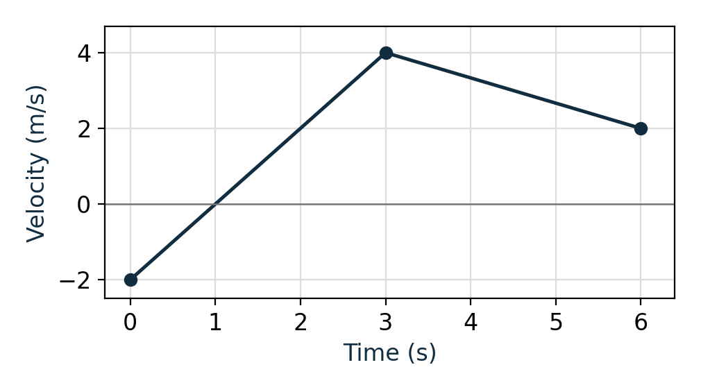
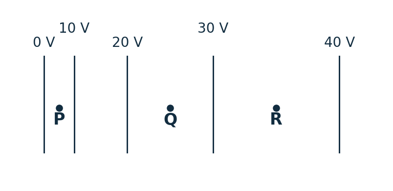
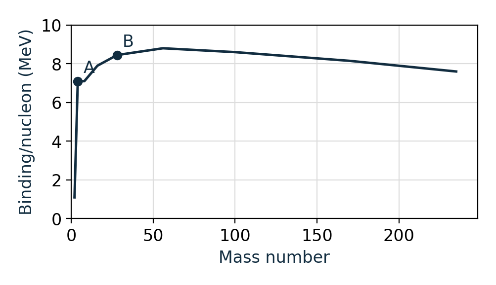
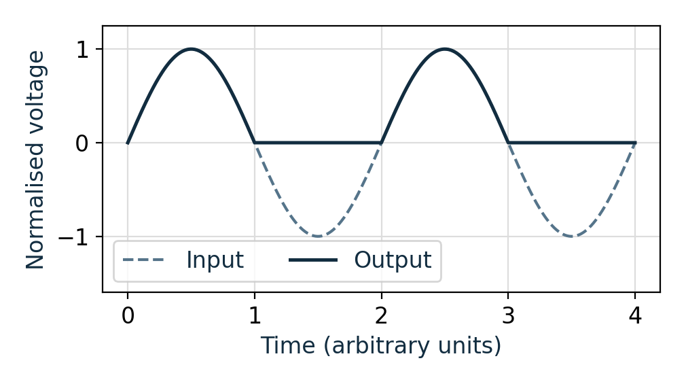
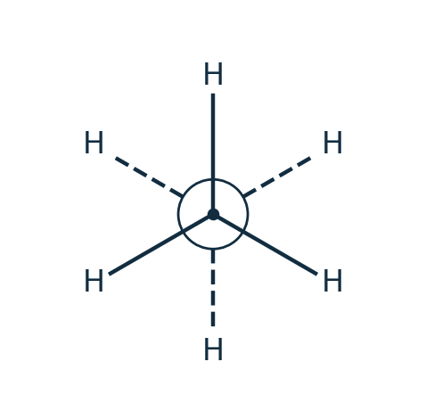
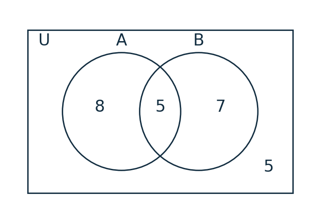
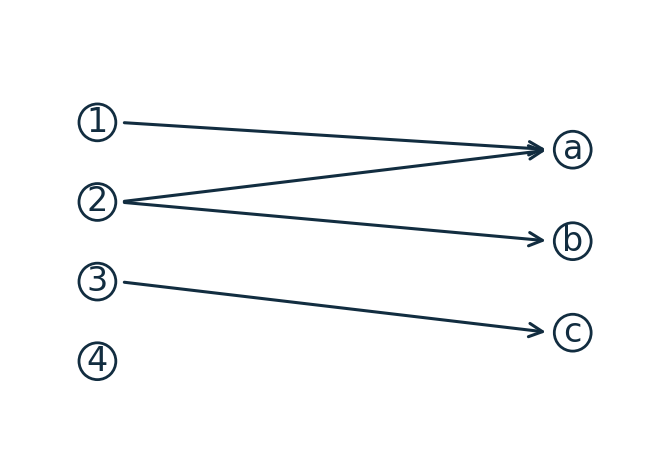
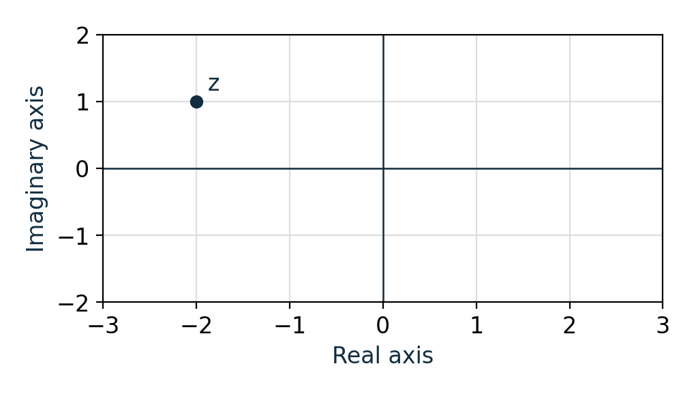

COMEDK UGET Test 15
180 minutes · 180 questions · +1 per correct answer · No negative marking
Physics
Q001. A reaction has total initial rest mass 10.040 u and total final rest mass 10.038 u. Assuming 931 MeV per unit mass defect, what energy is released?
A) 18.62 MeV
B) 0.002 MeV
C) 1.862 MeV
D) −1.862 MeV
Worked solution
Answer: (C) 1.862 MeV
Why and working: The mass decreases by 0.002 u. The positive released energy is 0.002×931=1.862 MeV.
Why not the others: (A) moves the decimal point one place. (B) treats mass units as units of energy. (D) the question asks for positive energy released.
Q002. On the velocity–time plot a cart has constant acceleration before 3 s and a different constant acceleration afterward. Between 0 and 6 s, what is the distance travelled?

A) 12 m
B) 13 m
C) 14 m
D) 5 m
Worked solution
Answer: (C) 14 m
Why and working: The graph goes from −2 to +4 m/s by 3 s and then to +2 m/s at 6 s. The first stretch crosses zero at 1 s and contributes triangles of magnitudes 1 m and 4 m. The later trapezoid contributes 9 m, giving 14 m.
Why not the others: (A) gives signed displacement by subtracting the first triangle. (B) omits the first triangle. (D) omits the later trapezoid.
Q003. An initially pure semiconductor acquires a small concentration of donor atoms. At a temperature where they ionise, what comparison follows with its intrinsic state at the same temperature?
A) Both mobile-carrier densities rise by the same amount
B) Hole density rises above electron density
C) Electron density rises, hole density falls, and the bulk remains neutral
D) The entire bulk becomes negatively charged
Worked solution
Answer: (C) Electron density rises, hole density falls, and the bulk remains neutral
Why and working: Ionised donors provide electrons and leave fixed positive donor ions. At thermal equilibrium the carrier product is fixed at the same temperature, so the hole concentration falls as electron concentration rises.
Why not the others: (A) intrinsic electron-hole pair production does not describe donor balance. (B) donors give n-type behaviour. (D) fixed donor ions compensate the added electronic charge.
Q004. What density parameter describes a thin wire carrying a charge that varies from one segment to another?
A) Net charge per unit surface area only
B) Local charge per unit length
C) Mass per unit volume
D) Electric force per unit charge
Worked solution
Answer: (B) Local charge per unit length
Why and working: A line distribution is described by λ=dQ/dl. Integrating λ over length recovers total charge.
Why not the others: (A) describes a surface distribution. (C) is mass density. (D) is electric field.
Q005. Two tracking beacons have positions (1+3t,8−2t) and (7+t,2) in metres at time t in seconds. Do they ever meet at t≥0, and if so where?
A) Yes, at (10,2) m
B) Yes, at (7,2) m
C) No, because one beacon has constant y
D) No, because their x speeds differ
Worked solution
Answer: (A) Yes, at (10,2) m
Why and working: The y coordinates agree only when 8−2t=2, at t=3. At that instant both x values are 10, so both coordinate conditions hold.
Why not the others: (B) does not evaluate the second beacon position at the meeting time. (C) the moving beacon can cross y=2. (D) different x speeds can bring the x coordinates together.
Q006. On the equipotential map, equal potential steps are marked by adjacent lines. At which site is the electric field magnitude largest?

A) P
B) Q
C) R
D) All three are equal
Worked solution
Answer: (A) P
Why and working: The local field magnitude is approximately the potential change divided by normal spacing. Equal steps with the closest spacing at P make its gradient greatest.
Why not the others: (B) the lines near Q are farther apart. (C) the greatest spacing gives the smallest gradient. (D) equal voltage steps do not give equal gradients when spacing varies.
Q007. A component’s V plotted against I is a straight line through the origin over its working range. What ratio is constant over the range for nonzero current?
A) V/I
B) VI
C) V²I
D) I/V²
Worked solution
Answer: (A) V/I
Why and working: A line through the origin means V=RI. Thus the ratio V/I equals the constant slope R.
Why not the others: (B) is power and grows as I squared. (C) varies with current. (D) has an extra voltage factor in the denominator.
Q008. A rough horizontal surface has static friction limit 12 N and kinetic friction 9 N. A block at rest is pulled by 10 N. How much friction acts?
A) 12 N opposite the pull
B) 9 N opposite the pull
C) Zero
D) 10 N opposite the pull
Worked solution
Answer: (D) 10 N opposite the pull
Why and working: Since 10 N is under the static limit, the block stays still. Static friction adjusts to balance the actual applied force.
Why not the others: (A) uses the maximum instead of the needed static force. (B) kinetic friction applies only once slipping occurs. (C) would permit acceleration.
Q009. A straight long vertical wire carries n amperes upward. A contour viewed from above goes anticlockwise once around it. What is the signed circulation of its magnetic field?
A) +μ₀n
B) −μ₀n
C) Zero
D) +2μ₀n
Worked solution
Answer: (A) +μ₀n
Why and working: The right-hand rule for the anticlockwise contour gives an upward normal. The enclosed current is therefore +n in Ampère’s law.
Why not the others: (B) uses a downward normal. (C) the wire pierces the contour. (D) one turn counts the current once.
Q010. A magnetic dipole lies exactly perpendicular to a uniform field. If its moment is doubled and field strength halved without reorienting it, what happens to the torque magnitude?
A) It doubles
B) It halves
C) It is unchanged and nonzero
D) It becomes zero
Worked solution
Answer: (C) It is unchanged and nonzero
Why and working: The torque is mB sin 90°=mB. The specified factors cancel and the dipole is still perpendicular.
Why not the others: (A) uses only the change in m. (B) uses only the change in B. (D) perpendicular alignment gives maximal torque.
Q011. Two carts collide elastically along one line. A 2 kg cart moving at +6 m/s strikes a stationary 4 kg cart. What is the struck cart’s final velocity?
A) +4 m/s
B) +2 m/s
C) +6 m/s
D) −4 m/s
Worked solution
Answer: (A) +4 m/s
Why and working: Momentum gives 12=2v₁+4v₂. Relative separation speed equals approach speed in an elastic collision, so v₂−v₁=6. Combining gives v₂=4 m/s.
Why not the others: (B) does not satisfy both conservation and relative-speed conditions. (C) would leave insufficient total momentum for rebound of the lighter cart. (D) would violate the direction implied by the two equations.
Q012. A loop lies flat on a table in a magnetic field pointing vertically upward. The loop is stretched so its area increases while the field is held fixed. Viewed from above, what current is induced during the stretching?
A) Anticlockwise
B) Clockwise
C) Zero because the field is constant
D) Alternating despite continuous growth of area
Worked solution
Answer: (B) Clockwise
Why and working: Upward flux increases because the loop encloses more area. The opposing induced field points downward, which requires clockwise circulation when viewed from above.
Why not the others: (A) would reinforce the flux increase. (C) area change induces an emf even at constant field. (D) monotonic area growth has a fixed induced sense.
Q013. In a series LCR phasor diagram take current as reference. Which component voltage lies 90° behind current?
A) Inductor voltage
B) Resistor voltage
C) The magnitude of the source voltage always
D) Capacitor voltage
Worked solution
Answer: (D) Capacitor voltage
Why and working: For an ideal capacitor i=C dv/dt, so the current leads its voltage by 90°. The resistor voltage is in phase and the inductor voltage leads.
Why not the others: (A) the inductor voltage leads. (B) the resistor voltage has zero phase difference. (C) source phase depends on the net reactance.
Q014. For fixed-axis rotation, which quantity plays the role that mass plays in F=ma?
A) Moment of inertia
B) Angular momentum
C) Torque
D) Angular speed
Worked solution
Answer: (A) Moment of inertia
Why and working: The rotational equation is τ=Iα. The factor I resists changes in angular speed in the same role that m relates force to linear acceleration.
Why not the others: (B) corresponds to linear momentum. (C) corresponds to force. (D) corresponds to velocity.
Q015. A clear plastic sheet transmits visible light but absorbs most radiation just beyond violet. Which band is it designed to suppress?
A) Infrared
B) Microwaves
C) Long radio waves
D) Ultraviolet
Worked solution
Answer: (D) Ultraviolet
Why and working: Beyond violet on the short-wavelength side is the ultraviolet band. Infrared and the other listed bands are on the red, long-wavelength side.
Why not the others: (A) infrared is just beyond red. (B) microwaves have much longer wavelengths than visible light. (C) radio waves in this choice are longer still.
Q016. Light is guided by total internal reflection in a fibre. What happens to the core–cladding critical angle if a lower-index cladding replaces the original one while the core remains fixed?
A) It decreases
B) It increases
C) It becomes 90° regardless of the new index
D) It is independent of the cladding
Worked solution
Answer: (A) It decreases
Why and working: At the critical angle sin c=n_cladding/n_core. Lowering the numerator lowers c within its first-quadrant range.
Why not the others: (B) reverses the index ratio’s effect. (C) 90 degrees is the limiting case of equal indices. (D) the cladding index explicitly enters.
Q017. At one instant two satellites are orbiting different planets. Satellite A follows a circular orbit of radius R about mass M, and B an orbit of radius 2R about mass 8M. Which comparison is correct for circular speeds?
A) B is four times as fast as A
B) B is half as fast as A
C) B is twice as fast as A
D) They have the same speed
Worked solution
Answer: (C) B is twice as fast as A
Why and working: Circular speed squared is GM/r. Across the orbits this quantity rises by a factor 8/2=4, so speed rises by √4=2.
Why not the others: (A) is the ratio of squared speeds. (B) inverts the comparison. (D) the ratio M/r does not stay the same.
Q018. Two coherent waves reach a point with constant phase difference π. If one source is shifted in phase by π without changing either path, what can happen at that same point?
A) The waves become incoherent
B) The phase difference is still π modulo 2π
C) The phase difference becomes zero modulo 2π, changing the interference there from destructive to constructive
D) The frequencies must double
Worked solution
Answer: (C) The phase difference becomes zero modulo 2π, changing the interference there from destructive to constructive
Why and working: Phase differences add modulo 2π. Adding π to the previous π gives a relative phase equivalent to zero, with in-phase addition.
Why not the others: (A) a fixed phase shift preserves coherence. (B) incorrectly ignores the applied phase shift. (D) phase can change without changing frequency.
Q019. A pulse contains 3N photons of frequency ν and N photons of frequency 3ν. Which expression gives its total energy?
A) 4Nhν
B) 12Nhν
C) 3Nhν
D) 6Nhν
Worked solution
Answer: (D) 6Nhν
Why and working: Add the two photon groups separately: (3N)hν+Nh(3ν)=6Nhν. The energy is the sum of the individual photon energies.
Why not the others: (A) counts all photons as having the lower frequency. (B) counts all photons as having the higher frequency. (C) omits one group’s complete contribution.
Q020. A liquid film spans a wire frame with one sliding side of length 0.10 m. The film has two exposed faces and surface tension 0.030 N/m. What work is needed to pull the side 0.020 m quasistatically?
A) 6.0×10⁻⁵ J
B) 1.2×10⁻⁴ J
C) 6.0×10⁻³ J
D) 3.0×10⁻³ J
Worked solution
Answer: (B) 1.2×10⁻⁴ J
Why and working: Each face increases by 0.10×0.020 m². Surface work is γ times both area increases, or 0.030×2×0.10×0.020 J.
Why not the others: (A) counts only one exposed face. (C) is the force in newtons, not work in joules. (D) is the one-face force.
Q021. In Bohr’s hydrogen model, how does orbital speed change from n=1 to n=3?
A) It becomes one ninth
B) It triples
C) It becomes one third
D) It stays fixed
Worked solution
Answer: (C) It becomes one third
Why and working: Bohr angular momentum is proportional to n while radius is proportional to n². Hence speed scales as 1/n.
Why not the others: (A) uses the energy or radius factor. (B) inverts the speed ratio. (D) different orbits have different Coulomb speeds.
Q022. The curve marks a light parent A and a potential product B closer to the peak. For a proposed fusion comparison with total proton and neutron counts separately preserved, which region corresponds to lower total rest energy of the bound nuclei?

A) A, because its binding energy per nucleon is smaller
B) Both, because equal nucleon count forces equal total binding
C) The region with the smallest binding per nucleon always has the smallest rest energy
D) B, because its binding energy per nucleon is larger
Worked solution
Answer: (D) B, because its binding energy per nucleon is larger
Why and working: Greater total binding at fixed nucleon count lowers rest energy relative to the same free-nucleon reference, assuming the same proton and neutron totals. B has larger binding per nucleon.
Why not the others: (A) less binding corresponds to less reduction in rest energy. (B) binding per nucleon can differ. (C) reverses the meaning of binding energy.
Q023. A dark metal plate warms a facing body across a vacuum gap even though the bodies never touch. Which transfer mechanism works across the gap?
A) Convection of the vacuum
B) Molecular conduction through the gap
C) Thermal radiation
D) Mass diffusion through a solid bridge
Worked solution
Answer: (C) Thermal radiation
Why and working: Electromagnetic radiation traverses vacuum. Convection and ordinary molecular conduction need material in the path.
Why not the others: (A) vacuum cannot circulate as a fluid. (B) there are no contact particles in the empty gap. (D) no bridge is present.
Q024. A p–n junction is reverse biased. Which connection provides that bias?
A) p side to positive terminal and n side to negative terminal
B) Both sides to the same positive terminal
C) Both sides to the same negative terminal
D) p side to negative terminal and n side to positive terminal
Worked solution
Answer: (D) p side to negative terminal and n side to positive terminal
Why and working: Reverse bias reinforces the built-in junction field, widening the depletion region. This happens when p is negative relative to n.
Why not the others: (A) is forward bias. (B) places both sides at equal potential. (C) also provides no external junction voltage.
Q025. Two points near a nonzero electric field have field lines drawn closer near A than near B on the same consistent field-line sketch. What does this convention indicate?
A) Greater field magnitude near B
B) Greater field magnitude near A
C) The field must point from A to B
D) The potential necessarily rises toward A regardless of arrows
Worked solution
Answer: (B) Greater field magnitude near A
Why and working: Field-line density represents relative magnitude on such a sketch. Local arrow tangents are needed for direction and potential change.
Why not the others: (A) reverses the density convention. (C) the points need not be on the same field line. (D) potential direction depends on field direction.
Q026. For a cyclic gas process the total work done by the gas is −90 J. What is the total heat transferred into the gas taken as a signed value?
A) +90 J
B) −90 J
C) Zero
D) −180 J
Worked solution
Answer: (B) −90 J
Why and working: Internal energy returns to its initial value over a cycle. Hence Q_net=W_by=−90 J, meaning net heat leaves the gas.
Why not the others: (A) uses work on the system without adjusting signs. (C) only ΔU is zero. (D) counts the work magnitude twice.
Q027. Four equal positive point charges are placed at the corners of a square. What does the electrostatic potential energy become relative to its original value if all charges are doubled and every length is doubled?
A) It doubles
B) It quadruples
C) It stays the same
D) It halves
Worked solution
Answer: (A) It doubles
Why and working: Each pair term kq_iq_j/r gains a fourfold numerator and twofold denominator. Each term and their sum therefore double.
Why not the others: (B) ignores expansion. (C) counts only one of the doubled charges per pair. (D) uses distance scaling alone.
Q028. Two identical resistors are switched from parallel to series across the same ideal battery. How long must the series connection run to dissipate the same total energy as the parallel connection does in one minute?
A) Two minutes
B) Four minutes
C) One minute
D) One quarter of a minute
Worked solution
Answer: (B) Four minutes
Why and working: With resistance R each, the equivalent values are R/2 in parallel and 2R in series. At fixed voltage the series power is one quarter as large, requiring four times the duration.
Why not the others: (A) compares only one of the equivalent resistance changes. (C) ignores the change in total power. (D) inverts the time ratio.
Q029. Tuning forks of 256 Hz and an unknown frequency above 256 Hz produce 4 beats per second. Warming the unknown fork slightly lowers its frequency until the beat rate is 1 per second, and it has not crossed 256 Hz. What is its new frequency?
A) 255 Hz
B) 259 Hz
C) 261 Hz
D) 257 Hz
Worked solution
Answer: (D) 257 Hz
Why and working: Beat frequency is the absolute frequency difference. The unknown is still above 256 Hz, so the new one-hertz difference gives 257 Hz.
Why not the others: (A) selects the branch below 256 Hz. (B) uses the change in beat rate as the final difference. (C) adds one to the original unknown frequency.
Q030. Which change strengthens the approximately uniform field inside a long solenoid while keeping current fixed?
A) Decrease the number of turns per unit length
B) Increase the number of turns per unit length
C) Reverse the leads only
D) Turn the solenoid end for end in otherwise empty space
Worked solution
Answer: (B) Increase the number of turns per unit length
Why and working: The long-solenoid internal magnitude is μ₀nI. Increasing n at fixed I strengthens it.
Why not the others: (A) would weaken it. (C) reverses direction rather than magnitude. (D) orientation alone does not change its own field magnitude.
Q031. Why can a magnetic field line continue through a bar magnet to make a closed loop, whereas an exterior drawing alone appears to start at one pole?
A) A north pole creates isolated mobile magnetic charge
B) The field stops at the surface and gravity connects the two ends
C) Magnetic field lines have no isolated sources or sinks, so they connect through the magnet
D) The internal field is everywhere zero by definition
Worked solution
Answer: (C) Magnetic field lines have no isolated sources or sinks, so they connect through the magnet
Why and working: Magnetic flux has zero net value through any closed surface. The familiar outside paths continue through the material, completing loops.
Why not the others: (A) an isolated magnetic pole is not part of this model. (B) magnetic lines are continuous here. (D) the interior contributes to the overall field.
Q032. A projectile is launched with horizontal component 6 m/s and upward vertical component 8 m/s. Ignore drag. What is its speed at the highest point?
A) 8 m/s
B) 10 m/s
C) Zero
D) 6 m/s
Worked solution
Answer: (D) 6 m/s
Why and working: Vertical velocity vanishes at the highest point, but there is no horizontal acceleration. Thus the remaining horizontal speed is still 6 m/s.
Why not the others: (A) gives the initial vertical component. (B) gives the launch speed. (C) only the vertical component vanishes.
Q033. Why does an inductor produce no self-induced emf after a direct current has settled to a constant nonzero value?
A) It has no magnetic field whenever current is nonzero
B) Its magnetic flux linkage is then constant
C) A steady current changes the inductance indefinitely
D) The magnetic field becomes an electric current in another wire by definition
Worked solution
Answer: (B) Its magnetic flux linkage is then constant
Why and working: Self-induced emf is −L dI/dt for constant L. At steady current dI/dt=0 even though the magnetic field need not vanish.
Why not the others: (A) a steady current can maintain a steady field. (C) no time-varying inductance is specified. (D) self induction concerns the same circuit.
Q034. A driven series RLC circuit is initially at resonance with fixed voltage amplitude. If R alone doubles while the frequency remains the same, what happens to current amplitude?
A) It doubles
B) It halves
C) It remains fixed
D) It vanishes
Worked solution
Answer: (B) It halves
Why and working: At resonance the opposing reactances cancel. The impedance is R, so amplitude V/R is halved by doubling R.
Why not the others: (A) inverts the resistance dependence. (C) the resonant frequency can stay fixed while amplitude changes. (D) finite R does not give zero response.
Q035. Why can putting a heavy load on rollers make it easier to transport than dragging the same load on a surface?
A) Rolling typically causes less dissipative resistance than sustained sliding under comparable conditions
B) Gravity stops acting on a rolling object
C) Rolling always removes contact forces altogether
D) A roller makes the object’s mass disappear
Worked solution
Answer: (A) Rolling typically causes less dissipative resistance than sustained sliding under comparable conditions
Why and working: Rolling largely avoids continuous sliding of the contacting surfaces. Deformations can still cause rolling resistance, but it is often smaller.
Why not the others: (B) weight remains. (C) contact forces still support the load. (D) mass is unchanged.
Q036. At a spherical refracting surface, a real object is very far away on the air side. The glass has n=1.5 and signed radius +10 cm. Where is the paraxial image?
A) 30 cm into the glass
B) 20 cm into the glass
C) 30 cm into the air
D) 10 cm into the glass
Worked solution
Answer: (A) 30 cm into the glass
Why and working: In n₂/v−n₁/u=(n₂−n₁)/R the object term tends to zero. Thus 1.5/v=0.5/10, giving +30 cm.
Why not the others: (B) omits the transmitted index in the image term. (C) uses the wrong sign for v. (D) confuses focal distance with curvature radius.
Q037. A double-slit pattern of width β is produced in air. An index-1.5 liquid fills the optical space and the screen distance is doubled, while source frequency and slit separation stay fixed. What is the new fringe width?
A) 3β
B) 4β/3
C) 2β
D) 2β/3
Worked solution
Answer: (B) 4β/3
Why and working: The wavelength becomes λ/1.5 at unchanged frequency. Since β=λD/d, multiplying D by two gives a net factor 2/1.5=4/3.
Why not the others: (A) uses the refractive index as a multiplier for wavelength. (C) ignores the medium change. (D) ignores the doubled screen distance.
Q038. Two equal pucks approach a junction along perpendicular axes with equal speeds. They stick on collision. In what direction does the joined puck pair move?
A) Along the first puck’s original direction only
B) Opposite the vector sum of incoming momenta
C) Along the bisector of their original velocity directions
D) Perpendicular to both incoming directions
Worked solution
Answer: (C) Along the bisector of their original velocity directions
Why and working: Momentum is a vector. Equal perpendicular components add along their in-plane angle bisector and cannot point opposite their sum.
Why not the others: (A) omits one of the two incoming momenta. (B) would reverse conserved total momentum. (D) the two components lie in the original plane.
Q039. Two particles have equal de Broglie wavelengths. What must be equal?
A) Momentum magnitudes
B) Masses
C) Speeds
D) Kinetic energies
Worked solution
Answer: (A) Momentum magnitudes
Why and working: The relation λ=h/p depends directly on momentum magnitude. Different masses can share momentum while their speeds and kinetic energies differ.
Why not the others: (B) mass is not independently fixed. (C) speed can differ for different masses. (D) energy can differ at fixed momentum.
Q040. Two hydrogen emission lines both terminate at n=2, from n=3 and n=5. Which has the shorter wavelength?
A) The transition from n=3
B) The transition from n=5
C) They have equal wavelengths
D) Both have infinite wavelength
Worked solution
Answer: (B) The transition from n=5
Why and working: The higher initial n lies closer to the ionisation limit, so the drop to n=2 is greater from n=5. Greater photon energy means shorter wavelength.
Why not the others: (A) corresponds to a smaller energy drop. (C) sharing a final level does not equate the drops. (D) both are nonzero energy differences.
Q041. A body of mass M has radius of gyration k about an axis. If its mass remains M and its moment of inertia about that axis quadruples, what is the new radius of gyration?
A) 4k
B) k/2
C) k
D) 2k
Worked solution
Answer: (D) 2k
Why and working: From I=Mk², a fourfold moment at fixed mass requires a twofold radius of gyration.
Why not the others: (A) uses linear rather than square-root scaling. (B) inverts the square-root factor. (C) quadrupled inertia means a different radius of gyration.
Q042. Which description identifies nuclear fission rather than fusion?
A) Two light nuclei combine into a heavier nucleus
B) A valence electron moves to a higher electronic orbital
C) A heavy nucleus splits into two intermediate-mass fragments
D) Atomic nuclei rearrange positions without changing composition
Worked solution
Answer: (C) A heavy nucleus splits into two intermediate-mass fragments
Why and working: Fission is division of a heavy nucleus. Fusion combines lighter nuclei, while the other changes are not changes of a nucleus’s composition.
Why not the others: (A) describes fusion. (B) is an electronic excitation. (D) does not describe nuclear splitting.
Q043. A diode carries only a tiny current at a moderate reverse voltage but a sharply larger current beyond a sufficiently high reverse-voltage magnitude. What regime explains the change?
A) Forward knee operation
B) Zero-bias thermal equilibrium
C) Reverse breakdown
D) A permanently unchanged saturation current
Worked solution
Answer: (C) Reverse breakdown
Why and working: In the reverse characteristic a sufficiently large field produces breakdown and a rapid rise in current magnitude.
Why not the others: (A) the sign of the bias remains reverse. (B) the diode is externally biased. (D) the observed rise contradicts constant current.
Q044. A liquid wets a circular capillary with contact angle less than 90°. The tube is replaced with one of half its radius, using the same liquid and surface. What happens to equilibrium rise?
A) It halves
B) It quadruples
C) It doubles
D) It turns into a depression
Worked solution
Answer: (C) It doubles
Why and working: The rise is proportional to cos θ/r at fixed liquid density, surface tension and gravity. Halving r doubles the positive rise.
Why not the others: (A) uses direct radius scaling. (B) incorrectly uses inverse area scaling. (D) wetting gives positive cos θ.
Q045. An electric dipole is placed in a uniform field with its moment 120° from the field. If released from rest, in which direction does its initial torque tend to change the angle?
A) Toward a smaller angle
B) Toward 180°
C) It leaves the angle unchanged
D) It makes the dipole moment vanish
Worked solution
Answer: (A) Toward a smaller angle
Why and working: The energy U=−pE cos θ falls as θ decreases for 0<θ<180°. Torque acts toward alignment and has nonzero magnitude pE sin 120°.
Why not the others: (B) would raise energy toward unstable opposition. (C) the sine is nonzero. (D) torque changes orientation rather than destroying the dipole.
Q046. A neutral isolated conducting sphere is brought close to a positive rod without contact. After electrostatic equilibrium, which charge pattern is possible on the sphere?
A) Negative everywhere, with a negative net charge
B) Positive near the rod and negative farther away
C) No redistribution because the sphere is isolated
D) Negative near the rod and positive farther away, with zero net charge
Worked solution
Answer: (D) Negative near the rod and positive farther away, with zero net charge
Why and working: Mobile electrons are drawn to the near side. With no charge transfer, a corresponding deficit appears elsewhere and total charge remains zero.
Why not the others: (A) would require an external source of electrons. (B) reverses electron attraction. (C) isolation prevents net transfer, not internal motion.
Q047. A blackbody is heated until its absolute temperature doubles. How does the wavelength of its spectral maximum change?
A) It doubles
B) It falls to one quarter
C) It halves
D) It is unchanged
Worked solution
Answer: (C) It halves
Why and working: Wien’s displacement law is λ_max T=constant. Doubling T halves the peak wavelength.
Why not the others: (A) uses direct proportionality. (B) confuses the relationship with a different power law. (D) the spectral peak shifts with temperature.
Q048. An ordinary metallic wire has 8 Ω at a reference temperature. Its resistance increases by 20% on warming, with negligible dimensional change. What is its new conductivity relative to the original?
A) 6/5
B) 4/5
C) 1/5
D) 5/6
Worked solution
Answer: (D) 5/6
Why and working: At constant geometry resistance is proportional to resistivity. Conductivity is its reciprocal, so the factor is 1/1.2=5/6.
Why not the others: (A) gives the resistance factor. (B) assumes a twenty-percent rise is undone by subtracting twenty percent. (C) confuses the fraction changed with the final ratio.
Q049. A particle passes undeflected through crossed uniform electric and magnetic fields with speed v perpendicular to both. At the same direction but twice the speed, which force has the larger magnitude?
A) The magnetic force, by a factor of two over the electric force
B) The electric force, by a factor of two over the magnetic force
C) They remain equal
D) Both become zero
Worked solution
Answer: (A) The magnetic force, by a factor of two over the electric force
Why and working: Originally qE and qvB have equal magnitudes. Changing speed leaves the electric force fixed and doubles the magnetic one.
Why not the others: (B) the electric force is independent of speed in this model. (C) equality fixes the selected speed E/B. (D) both fields are still present.
Q050. A particle in uniform circular motion covers 90° in 0.50 s. What is its angular speed magnitude?
A) π/2 rad/s
B) 2π rad/s
C) 180 rad/s
D) π rad/s
Worked solution
Answer: (D) π rad/s
Why and working: The angular displacement is π/2 radians. Dividing by 0.50 s gives π rad/s.
Why not the others: (A) gives the angle without dividing by time. (B) uses a half-turn rather than a quarter-turn. (C) computes a degree rate and labels it radians.
Q051. Which sample is weakly attracted toward a region of stronger magnetic field yet lacks ferromagnetic order under ordinary conditions?
A) Aluminium
B) Bismuth
C) Copper
D) A strongly ferromagnetic iron specimen
Worked solution
Answer: (A) Aluminium
Why and working: Aluminium is paramagnetic and develops a small induced moment aligned with the field. That produces weak attraction in a gradient.
Why not the others: (B) has a diamagnetic response. (C) copper is diamagnetic. (D) iron represents the excluded ferromagnetic case.
Q052. A primary coil’s current changes at 4 A/s and induces 0.20 V in a nearby open secondary. With the geometry unchanged, what secondary emf magnitude follows at 10 A/s?
A) 0.08 V
B) 2.0 V
C) 0.20 V
D) 0.50 V
Worked solution
Answer: (D) 0.50 V
Why and working: Mutual induction gives emf magnitude M times the current ramp. The rate increases by 10/4, so emf becomes 0.20×2.5=0.50 V.
Why not the others: (A) uses the inverse ramp factor. (B) uses 10 as a factor instead of a rate ratio. (C) fixed geometry fixes M but not emf.
Q053. On a level curve of radius R the maximum speed without sliding is v. With the same friction coefficient, what is the maximum speed on a level curve of radius 4R?
A) 4v
B) v/2
C) v
D) 2v
Worked solution
Answer: (D) 2v
Why and working: The limiting centripetal force is μmg. Equating to mv²/R gives v_max=√(μgR), so the fourfold radius doubles speed.
Why not the others: (A) uses a linear radius factor. (B) inverts the square-root factor. (C) the changed radius changes the demand for centripetal force.
Q054. An AC supply feeds two parallel branches. Their rms currents relative to supply voltage are 3 A in phase and 4 A lagging by 90°, respectively. What are the magnitude of the total rms current and the overall power factor?
A) 5 A and 0.60
B) 7 A and 3/7
C) 5 A and 0.80
D) 1 A and 1
Worked solution
Answer: (A) 5 A and 0.60
Why and working: The branch currents are perpendicular phasors, so the total has modulus √(3²+4²)=5 A. The in-phase component is 3 A, giving cos φ=3/5.
Why not the others: (B) adds orthogonal magnitudes directly. (C) uses the quadrature fraction. (D) subtracts magnitudes and discards the phase.
Q055. A thin glass lens has power +10 D in air and refractive index 1.50. It is immersed in a medium of refractive index 1.25 without changing its shape. What is its power now?
A) +2 D
B) +4 D
C) +8 D
D) −4 D
Worked solution
Answer: (B) +4 D
Why and working: Curvature is unchanged, so power scales with n_lens/n_medium−1. This factor drops from 0.50 to 0.20, giving 10×0.20/0.50=4 D.
Why not the others: (A) uses the new index factor without dividing by the original factor. (C) scales by the inverse of the medium index alone. (D) glass still has the larger index.
Q056. For the same mass M and radius R, which ideal body has the greatest moment about its central axis perpendicular to its plane or diameter through its centre as appropriate?
A) A uniform solid disc about its normal axis
B) A uniform solid sphere about its diameter
C) They all have the same moment
D) A thin circular ring about its normal axis
Worked solution
Answer: (D) A thin circular ring about its normal axis
Why and working: The tabulated coefficients of MR² are 1 for the ring, 1/2 for the disc, and 2/5 for the solid sphere.
Why not the others: (A) its mass is spread inward instead of entirely at R. (B) its coefficient is smaller still. (C) mass and outer radius alone do not fix the distribution.
Q057. A laboratory records a central diffraction maximum from one slit. A second, longer wavelength is used with unchanged screen position. Which adjustment of the slit can compensate for the broader tendency to preserve approximately the old spread?
A) Make the slit narrower
B) Make the slit wider
C) Leave its width fixed
D) Close the slit completely
Worked solution
Answer: (B) Make the slit wider
Why and working: Longer waves spread more through a given opening. A wider opening reduces diffraction spread, opposing that change.
Why not the others: (A) both changes would widen the spread. (C) the wavelength change would then broaden it. (D) would remove the transmitted pattern.
Q058. A circuit takes the dashed sinusoidal input and produces the solid output shown. Which operation identifies the circuit?

A) It is full-wave rectification
B) It is an ideal DC voltage regulator
C) It is half-wave rectification
D) It is polarity-preserving amplification
Worked solution
Answer: (C) It is half-wave rectification
Why and working: One input half-cycle is passed and the other blocked, giving one pulse each input period.
Why not the others: (A) both input halves yield pulses in full-wave rectification. (B) the plot contains time-varying pulses. (D) negative input portions are not reproduced.
Q059. Two soap bubbles have radii r and 2r and the same surface tension γ. What is the inner pressure of the smaller bubble minus that of the larger, in the same outside atmosphere?
A) 4γ/r
B) 2γ/r
C) γ/r
D) Zero
Worked solution
Answer: (B) 2γ/r
Why and working: The two excess pressures are 4γ/r and 4γ/(2r). Their ambient terms cancel, leaving 2γ/r.
Why not the others: (A) uses only the smaller bubble’s excess pressure. (C) uses a single liquid interface instead of two. (D) different curvature produces different excess pressures.
Q060. A closed surface enclosing charge +Q is deformed without any charge crossing it. An additional charge is then moved nearby outside. What happens to its total outward electric flux?
A) It increases when the external charge approaches
B) It remains Q/ε₀ throughout
C) It depends only on the deformed surface area
D) It becomes zero if the external charge is negative
Worked solution
Answer: (B) It remains Q/ε₀ throughout
Why and working: Gauss’s law counts net enclosed charge, which stays +Q. Shape and external charges can redistribute local field and flux without changing the total.
Why not the others: (A) external contributions have zero net flux. (C) surface area alone does not determine the flux integral. (D) an outside charge does not cancel enclosed charge.
Chemistry
Q061. A solution contains 0.30 mol solute in 600 g of solvent. Which molality follows?
A) 0.50 mol/kg
B) 0.18 mol/kg
C) 0.30 mol/kg
D) 500 mol/kg
Worked solution
Answer: (A) 0.50 mol/kg
Why and working: Molality uses kilograms of solvent, so divide 0.30 by 0.600. No solution volume is needed.
Why not the others: (B) multiplies rather than divides. (C) uses one kilogram rather than the given mass. (D) converts grams incorrectly.
Q062. Combustion of 0.30 g of a compound containing only C, H and O gives 0.44 g CO₂ and 0.18 g H₂O. What is the oxygen mass percentage? Use C=12, H=1 and O=16.
A) 40%
B) 46.7% approximately
C) 53.3% approximately
D) 6.7% approximately
Worked solution
Answer: (C) 53.3% approximately
Why and working: The product masses give 0.44×12/44=0.12 g C and 0.18×2/18=0.02 g H. The remaining 0.16 g is O, or 100×0.16/0.30≈53.3%.
Why not the others: (A) is the carbon fraction. (B) is the combined carbon and hydrogen percentage. (D) is the hydrogen fraction.
Q063. Standard reduction potentials for M³⁺/M and N⁺/N are −0.30 V and +0.40 V. In the spontaneous standard cell, how many N⁺ ions are consumed per M atom oxidised and what is E°_cell?
A) Three and +0.70 V
B) Three and +2.10 V
C) One and +0.70 V
D) One and −0.70 V
Worked solution
Answer: (A) Three and +0.70 V
Why and working: M oxidation releases three electrons while each N⁺ reduction takes one. E°=0.40−(−0.30)=0.70 V; changing stoichiometric coefficients does not scale voltage.
Why not the others: (B) incorrectly multiplies an intensive potential. (C) ignores electron balance. (D) ignores electron balance and reverses the voltage sign.
Q064. At an instant, a reactant concentration curve has a horizontal tangent. What is the instantaneous disappearance rate there?
A) Zero
B) Equal to the positive concentration
C) Equal to the average over every earlier interval
D) Undefined solely because the tangent is horizontal
Worked solution
Answer: (A) Zero
Why and working: Disappearance rate is the negative of the local slope. A horizontal tangent has slope zero.
Why not the others: (B) confuses value and derivative. (C) earlier slopes can differ. (D) horizontal gives a defined slope of zero.
Q065. The Newman projection looks down ethane’s carbon–carbon bond. Which description matches the H positions shown?

A) Staggered, with 60° offset between nearest front and back bonds
B) Eclipsed, with front and back bonds aligned
C) A planar ethene geometry
D) Staggered, but with all front and back bonds aligned
Worked solution
Answer: (A) Staggered, with 60° offset between nearest front and back bonds
Why and working: Viewed down the axis, the back bonds lie between adjacent front bonds. Their 60° offset avoids eclipsing.
Why not the others: (B) there is a visible angular offset. (C) ethane retains a single C–C bond. (D) exact alignment defines eclipsing.
Q066. Which pair correctly gives the d-electron counts for neutral Fe and its Fe²⁺ ion in their usual ground configurations?
A) d⁶ and d⁴
B) d⁶ and d⁶
C) d⁸ and d⁶
D) d⁶ and d⁸
Worked solution
Answer: (B) d⁶ and d⁶
Why and working: Neutral Fe is [Ar]3d⁶4s². Formation of Fe²⁺ removes the two 4s electrons before removing any 3d electron.
Why not the others: (A) subtracts both electrons from 3d. (C) counts 4s electrons as 3d initially. (D) oxidation does not add d electrons.
Q067. In [M(NH₃)₄(H₂O)₂]²⁺, what is the coordination number if both ligands are monodentate?
A) Four
B) Six
C) Two
D) Eight
Worked solution
Answer: (B) Six
Why and working: Each ammonia and water ligand contributes one donor atom. The four plus two attachments give coordination number six.
Why not the others: (A) counts only ammonia. (C) counts only water. (D) mixes the ionic charge into the donor count.
Q068. For a naturally occurring element the two isotope masses are 10 and 11 u and their abundances are 20% and 80%. What is its average atomic mass?
A) 10.2 u
B) 10.5 u
C) 21 u
D) 10.8 u
Worked solution
Answer: (D) 10.8 u
Why and working: Use the abundance-weighted mean 0.20×10+0.80×11=10.8 u.
Why not the others: (A) reverses the abundances. (B) uses equal weights. (C) adds both masses without weighting.
Q069. Which name corresponds to (CH₃)₃CBr?
A) 2-Bromo-2-methylpropane
B) 1-Bromo-2-methylpropane
C) 2-Bromobutane
D) 1-Bromobutane
Worked solution
Answer: (A) 2-Bromo-2-methylpropane
Why and working: The longest chain through the central C has three carbons. Both bromine and the additional methyl are on C2.
Why not the others: (B) would put Br on a terminal carbon. (C) uses an unbranched four-carbon chain. (D) is also unbranched and places Br at an end.
Q070. Which pair names a suitable immediate starting compound and reaction class for preparing propan-1-ol without changing its carbon skeleton?
A) Propanone by reduction
B) Propanoic acid by ordinary dehydration
C) Propanal by reduction
D) Propan-2-ol by oxidation
Worked solution
Answer: (C) Propanal by reduction
Why and working: Reduction of the terminal CHO group in propanal gives terminal CH₂OH. The three-carbon chain remains in place.
Why not the others: (A) gives a secondary alcohol. (B) dehydration does not reduce the acid group to a primary alcohol. (D) oxidation of a secondary alcohol gives a ketone.
Q071. Why can the simplest Bohr energy formula describe He⁺ much better than neutral helium?
A) Neutral helium has a smaller positive nuclear charge than He⁺
B) The He⁺ electron is at rest in its ground state
C) Bohr’s model can describe only neutral atoms
D) He⁺ has one electron, while neutral helium introduces electron–electron interaction absent from the one-electron model
Worked solution
Answer: (D) He⁺ has one electron, while neutral helium introduces electron–electron interaction absent from the one-electron model
Why and working: A one-electron ion still has a Coulomb nucleus–electron system with the appropriate Z. Two-electron helium has repulsion and screening that are outside the simple formula.
Why not the others: (A) both nuclei have Z=2. (B) a bound Bohr electron has nonzero orbital speed. (C) hydrogen-like ions are included.
Q072. What structural feature distinguishes a ketone carbonyl from an aldehyde carbonyl?
A) The ketone must have no oxygen atom
B) The ketone carbonyl carbon bonds to two hydrogen atoms
C) The ketone carbonyl carbon bonds to two carbon groups
D) The ketone always contains an O–H bond
Worked solution
Answer: (C) The ketone carbonyl carbon bonds to two carbon groups
Why and working: A ketone has the pattern R–CO–R′. In an aldehyde at least one attached atom is H instead of a carbon group.
Why not the others: (A) the carbonyl contains oxygen. (B) two H atoms describe methanal. (D) an ordinary ketone has no required OH group.
Q073. Which common name denotes (CH₃)₃N?
A) Trimethylamine
B) Tripropylamine
C) Propan-1-amine
D) Dimethylamine
Worked solution
Answer: (A) Trimethylamine
Why and working: Nitrogen bears three separate methyl substituents. There is no three-carbon chain and no N–H bond.
Why not the others: (B) three propyl groups would contain nine carbons. (C) a primary propyl amine has a continuous propyl group. (D) contains two methyl groups and one hydrogen on N.
Q074. Why is the second ionisation enthalpy of sodium much greater than its first?
A) The second electron comes from the original diffuse 3s orbital
B) The second electron is added rather than removed
C) The second electron is removed from the filled inner shell of Na⁺
D) The positive ion has fewer protons than the neutral atom
Worked solution
Answer: (C) The second electron is removed from the filled inner shell of Na⁺
Why and working: Loss of the first 3s electron leaves the neon core. The next removal takes a more strongly held core electron away from a cation.
Why not the others: (A) 3s was emptied first. (B) ionisation removes an electron. (D) the nucleus is unchanged.
Q075. An open-chain sugar is a ketopentose. Which finding agrees with that label?
A) Five carbons and a terminal aldehyde group
B) Six carbons and an internal carbonyl
C) Five carbons and no carbonyl group
D) Five carbons and a carbonyl bonded to carbon on both sides
Worked solution
Answer: (D) Five carbons and a carbonyl bonded to carbon on both sides
Why and working: Pentose specifies five carbons. A ketone carbon has carbon neighbours on both sides, so its open-chain carbonyl is internal.
Why not the others: (A) would be an aldopentose. (B) would be a ketohexose. (C) would not give the indicated ketone.
Q076. A gas above a dilute solution obeys p=K_H x with K_H=500 atm. Its total gas mixture pressure is 10 atm, and its gas-phase mole fraction in that mixture is 0.20. What is its dissolved mole fraction?
A) 0.020
B) 0.040
C) 0.20
D) 0.004
Worked solution
Answer: (D) 0.004
Why and working: The gas partial pressure is 10×0.20=2 atm. Divide it by 500 atm to get dissolved mole fraction 0.004.
Why not the others: (A) uses total pressure instead of partial pressure. (B) introduces a factor ten in the division. (C) gives the gas composition rather than the dissolved composition.
Q077. For the same halide anion, why does LiCl have greater covalent character than KCl in the polarisation model?
A) The larger K⁺ concentrates its charge more strongly
B) Li⁺ has a larger negative charge
C) The smaller Li⁺ ion distorts the anion’s electron cloud more strongly
D) The chloride has a different ionic charge in the two compounds
Worked solution
Answer: (C) The smaller Li⁺ ion distorts the anion’s electron cloud more strongly
Why and working: The same +1 charge is concentrated over a smaller Li⁺ ion. Its stronger polarising effect increases sharing character.
Why not the others: (A) a larger cation is less polarising at equal charge. (B) Li⁺ is positive. (D) chloride is nominally −1 in both salts.
Q078. For a cell at 298 K with n=1 and E°=0.30 V, use E=E°−0.059 log₁₀Q. What is E when Q=0.10?
A) 0.241 V
B) 0.359 V
C) 0.300 V
D) 0.594 V
Worked solution
Answer: (B) 0.359 V
Why and working: Since log₁₀0.10=−1, the Nernst correction adds 0.059 V to E°.
Why not the others: (A) uses the log with the wrong sign. (C) would hold at Q=1. (D) does not apply the one-decade correction.
Q079. Two rate plots at fixed temperature show that adding a catalyst changes the time to reach equilibrium but gives the same final concentrations. Which interpretation fits both observations?
A) Only the forward rate changes at every composition and K increases
B) The catalyst raises the temperature enough to change the equilibrium composition
C) Activation barriers are reduced without changing the equilibrium constant
D) The catalyst acts only after equilibrium and leaves the approach untouched
Worked solution
Answer: (C) Activation barriers are reduced without changing the equilibrium constant
Why and working: An alternative reaction pathway changes rates for reaching equilibrium, while thermodynamic end states fix the same equilibrium constant at the stated temperature.
Why not the others: (A) a changed K would generally change equilibrium composition. (B) fixed temperature and unchanged plateau contradict it. (D) the different arrival times require changed kinetics.
Q080. At constant pressure a system’s enthalpy rises by 240 J, while its internal energy rises by 160 J. The only work mode is pressure–volume work. How much work does it do on the surroundings?
A) 400 J
B) 160 J
C) 80 J
D) −80 J
Worked solution
Answer: (C) 80 J
Why and working: The constant-pressure heat input is +240 J. From ΔU=Q−W_by, work by the system is 240−160=80 J.
Why not the others: (A) adds heat input to the state change. (B) gives ΔU rather than work. (D) would be work on the system.
Q081. Which of Ti, V, Cr and Mn comes first in the first transition series?
A) Vanadium
B) Titanium
C) Chromium
D) Manganese
Worked solution
Answer: (B) Titanium
Why and working: In increasing atomic number these are Ti=22, V=23, Cr=24 and Mn=25. Ti precedes the other listed metals.
Why not the others: (A) lies immediately after titanium. (C) lies after vanadium. (D) lies after chromium.
Q082. A tetrahedral d¹⁰ complex shows no unpaired electrons. Which observation follows specifically from that electronic occupancy?
A) It is paramagnetic because tetrahedral splitting always creates four singles
B) It is diamagnetic with no d–d excitation from an occupied d orbital to an empty d orbital
C) It must have five unpaired electrons because five d orbitals exist
D) It can show d–d absorption because one d orbital is entirely empty at d¹⁰
Worked solution
Answer: (B) It is diamagnetic with no d–d excitation from an occupied d orbital to an empty d orbital
Why and working: Ten electrons fill all five d orbitals with pairs. The filled set gives diamagnetism and no available empty d states for an ordinary d–d transition.
Why not the others: (A) geometry does not force singles in a full shell. (C) orbital count is not the number of singles. (D) the d set is full.
Q083. A bulb conductivity tester shows weak light for dilute acetic acid and stronger light for an equimolar strong acid under comparable geometry. What explains the weak response?
A) Acetic acid ionises completely but its ions are neutral
B) No ions are present in either solution
C) The weaker light proves acetic acid molecules contain no hydrogen
D) Acetic acid ionises only partially, so fewer mobile ions carry current
Worked solution
Answer: (D) Acetic acid ionises only partially, so fewer mobile ions carry current
Why and working: A weak electrolyte forms a smaller fraction of mobile ions at the same formal concentration. Conductivity depends on the mobile ion concentrations and their mobilities.
Why not the others: (A) ions have charge by definition. (B) both solutions contain mobile ions. (C) the formula contains acidic hydrogen.
Q084. An enantiopure secondary alkyl halide with a stereogenic reaction centre is converted to an alcohol by a clean single-step SN2 pathway. Which comparison of structures establishes the mechanism more reliably than comparing the R and S letters alone?
A) The R/S letter must remain unchanged because the other three groups stay attached
B) The geometry of the three unchanged groups is inverted when compared relative to the incoming and outgoing bonds
C) Every pair of products with the same molar mass proves backside approach
D) An achiral plane necessarily remains fixed through the reaction centre
Worked solution
Answer: (B) The geometry of the three unchanged groups is inverted when compared relative to the incoming and outgoing bonds
Why and working: Backside attack inverts the local tetrahedral arrangement. The formal R/S descriptor also depends on priority ordering, which can change when a leaving group is replaced.
Why not the others: (A) retaining the attachments does not retain their relative geometry. (C) equal mass provides no stereochemical information. (D) a stereogenic tetrahedral centre need not have such a plane.
Q085. Which observation supports ethanol’s OH functionality rather than an ether isomer’s under ordinary sodium-metal testing?
A) Ethanol releases hydrogen when the O–H hydrogen is replaced by sodium
B) Ethanol releases oxygen by breaking its C–C bond
C) Ethanol has no replaceable hydrogen on oxygen
D) An ether with no O–H bond supplies the same O–H proton
Worked solution
Answer: (A) Ethanol releases hydrogen when the O–H hydrogen is replaced by sodium
Why and working: Sodium reacts with alcohol to form an alkoxide and H₂. The ether isomer lacks an O–H hydrogen.
Why not the others: (B) oxygen gas is not the product. (C) ethanol contains an O–H bond. (D) the ether has no such proton.
Q086. Why does an oxidising agent itself undergo reduction in a redox reaction?
A) It offers electrons to the oxidised substance
B) It changes only the temperature
C) It accepts the electrons released by another species
D) It must remain at the same oxidation state
Worked solution
Answer: (C) It accepts the electrons released by another species
Why and working: The oxidising agent causes another species to lose electrons. Acquiring those electrons lowers its own oxidation state.
Why not the others: (A) describes a reducing agent instead. (B) redox requires electron accounting. (D) its reduction is an oxidation-state change.
Q087. Which reaction produces ethanal while retaining the carbon count of its alcohol precursor?
A) Oxidation of propan-2-ol
B) Reduction of ethanal with a hydride reagent
C) Controlled oxidation of ethanol with removal of the product
D) Dehydration of ethanol with strong acid
Worked solution
Answer: (C) Controlled oxidation of ethanol with removal of the product
Why and working: Mild oxidation turns ethanol’s CH₂OH group into CHO. Removing ethanal helps prevent further oxidation.
Why not the others: (A) gives a three-carbon ketone. (B) would consume ethanal to regenerate ethanol. (D) favours formation of an alkene.
Q088. Why does direct alkylation of ammonia with an excess alkyl halide often give more than one amine class?
A) The first amino product cannot act as a nucleophile
B) The primary amine formed can react further because nitrogen still has a lone pair
C) All amines lose their nitrogen immediately after formation
D) The alkyl halide is converted only to an alkene before ammonia attacks
Worked solution
Answer: (B) The primary amine formed can react further because nitrogen still has a lone pair
Why and working: An initial substitution gives an alkylamine. The product may compete with ammonia for remaining alkyl halide, producing more highly substituted nitrogen compounds.
Why not the others: (A) amines generally remain nucleophilic. (C) nitrogen remains in the products. (D) substitution need not proceed via an alkene.
Q089. Which preferred name represents CH₃CH₂CH₂CH₃?
A) But-1-ene
B) 2-Methylpropane
C) Butan-1-ol
D) Butane
Worked solution
Answer: (D) Butane
Why and working: Four carbons in one saturated chain give butane. There is neither a branch nor a functional group requiring a suffix.
Why not the others: (A) would require a double bond. (B) is a branched isomer. (C) would require OH.
Q090. The label D-(−)-fructose includes the symbols D and minus. What does the minus sign describe?
A) A left-hand OH at the reference stereocentre
B) The observed sense of optical rotation
C) A negative formal charge on the sugar
D) An aldehyde instead of a ketone
Worked solution
Answer: (B) The observed sense of optical rotation
Why and working: The prefix D describes configuration by the Fischer convention. The minus sign marks levorotation and is a distinct experimental property.
Why not the others: (A) left-hand OH at the reference centre would give L. (C) neutral fructose has no net formal charge. (D) optical rotation does not identify the carbonyl class.
Q091. Two solid samples contain the same small mass fraction of solute X. In sample A, X is uniformly distributed within one crystalline phase. In sample B, X has separated into visible grains of its own phase. Which is a homogeneous solid solution?
A) A only
B) B only
C) Both, because their overall compositions agree
D) Neither, because solutions are always liquid
Worked solution
Answer: (A) A only
Why and working: A single solid phase with uniform mixing qualifies as a solid solution. Separate grains give a heterogeneous material even at the same bulk composition.
Why not the others: (B) the distinct phases are explicitly visible. (C) same bulk percentages do not imply same phase arrangement. (D) solid solutions exist.
Q092. In the propagation step of radical chlorination of methane, which pair reacts to form HCl and a methyl radical?
A) Cl· and CH₄
B) Cl₂ and HCl
C) CH₃· and Cl₂
D) Two CH₃· radicals
Worked solution
Answer: (A) Cl· and CH₄
Why and working: A chlorine radical abstracts H from a C–H bond, giving HCl and leaving CH₃·.
Why not the others: (B) neither species is the H-abstraction pair. (C) that step gives chloromethane and another Cl radical. (D) two methyl radicals can terminate by combining.
Q093. Two spontaneous cell reactions have the same E°, but written reaction A transfers two electrons and B transfers three. Compare magnitudes of their standard Gibbs-energy changes as written.
A) A is 3/2 times B
B) They are equal
C) B is 9/4 times A
D) B is 3/2 times A
Worked solution
Answer: (D) B is 3/2 times A
Why and working: Magnitude is nFE° for positive E°. Equal F and E° leave the dependence linear in electron count.
Why not the others: (A) reverses the ratio. (B) E° alone does not determine molar ΔG° without n. (C) uses a quadratic dependence.
Q094. A reaction consists of a single elementary collision of two A species. Which rate-law feature is expected for that elementary step?
A) Second order in A
B) First order in A
C) Zero order in A
D) A half order in A
Worked solution
Answer: (A) Second order in A
Why and working: For the stated elementary bimolecular collision, the mass-action factor is [A]². An overall multistep rate need not follow this reasoning.
Why not the others: (B) would describe a one-particle elementary step. (C) ignores the concentration dependence. (D) the elementary collision uses two discrete particles.
Q095. How many molecules are present in 22 g of CO₂, whose molar mass is 44 g/mol?
A) 2N_A
B) N_A/2
C) 44N_A
D) N_A/22
Worked solution
Answer: (B) N_A/2
Why and working: The sample contains 22/44=0.50 mol. One mole contains N_A molecules.
Why not the others: (A) inverts the mass ratio. (C) uses the molar mass as a mole count. (D) divides by the sample mass without using molar mass.
Q096. Three ions Ti³⁺, V⁴⁺ and Cr⁵⁺ are isoelectronic. Which order of radius is expected from largest to smallest in comparable environments?
A) Cr⁵⁺, V⁴⁺, Ti³⁺
B) Ti³⁺, V⁴⁺, Cr⁵⁺
C) V⁴⁺, Ti³⁺, Cr⁵⁺
D) They are all equal
Worked solution
Answer: (B) Ti³⁺, V⁴⁺, Cr⁵⁺
Why and working: Each has 19 electrons, but Z increases 22→23→24. With the same electron count, greater nuclear attraction generally draws the cloud inward.
Why not the others: (A) gives the reverse nuclear-charge trend. (C) puts the intermediate-Z ion largest. (D) equal electron count does not imply equal nuclear attraction.
Q097. What is the correct name for the ion [Fe(CN)₆]⁴⁻?
A) Hexacyanidoiron(IV)
B) Hexacyanidoferrate(IV)
C) Hexacyanidoferrate(II)
D) Tetracyanidoferrate(II)
Worked solution
Answer: (C) Hexacyanidoferrate(II)
Why and working: Six cyanido ligands give total −6, so iron must be +2 to give −4. Anionic iron complexes use the ferrate ending.
Why not the others: (A) the complex is anionic and the metal state is +2. (B) confuses the ion charge with the metal oxidation state. (D) there are six ligands.
Q098. Which subshell does not exist for the shell n=2?
A) 2d
B) 2p
C) 2s
D) Both 2s and 2p are absent
Worked solution
Answer: (A) 2d
Why and working: For n=2, the allowed l are 0 and 1, corresponding to s and p. A d subshell requires l=2 and therefore n≥3.
Why not the others: (B) l=1 is allowed. (C) l=0 is allowed. (D) both listed subshells exist.
Q099. A solution contains two enantiomers at the same total concentration as a pure reference solution. The pure positive enantiomer would rotate light by +20° and the pure negative one by −20° under the same conditions. The mixture rotates by +8°. What fraction of its molecules are the positive enantiomer?
A) 0.40
B) 0.60
C) 0.70
D) 0.30
Worked solution
Answer: (C) 0.70
Why and working: For positive fraction p the rotations add to 20p−20(1−p)=8. This gives 40p=28 and p=0.70.
Why not the others: (A) gives the enantiomeric excess rather than the fraction. (B) would give rotation +4 degrees. (D) gives the negative enantiomer fraction.
Q100. Which listed alcohol has no hydrogen attached to its OH-bearing carbon?
A) Butan-2-ol
B) Propan-1-ol
C) 2-Methylpropan-2-ol
D) 2-Methylpropan-1-ol
Worked solution
Answer: (C) 2-Methylpropan-2-ol
Why and working: The OH-bearing C in 2-methylpropan-2-ol has three carbon substituents plus oxygen, leaving no C–H bond. It is a tertiary alcohol.
Why not the others: (A) secondary alcohol has one such H. (B) primary alcohol here has two such H. (D) the branching is on a neighbouring carbon.
Q101. When carbon forms four ordinary single covalent bonds, what do the valency and electronegativity concepts distinguish?
A) Valency counts combining capacity, while electronegativity describes attraction for shared electrons
B) Valency and electronegativity are always identical numerical quantities
C) Electronegativity counts the number of bonds while valency gives atomic mass
D) Electronegativity is the count of unpaired neutrons
Worked solution
Answer: (A) Valency counts combining capacity, while electronegativity describes attraction for shared electrons
Why and working: Carbon’s usual valency four describes how many bond units are formed. Attraction of electron density toward carbon relative to another atom is a separate property.
Why not the others: (B) the two quantities describe different features. (C) swaps the meanings and introduces mass. (D) electronegativity concerns electrons.
Q102. A silver-mirror test oxidises a simple aldehyde under basic conditions. Which organic functional group is present in the immediate oxidation product?
A) A more substituted ketone
B) Primary alcohol
C) Carboxylate
D) Alkene
Worked solution
Answer: (C) Carboxylate
Why and working: In basic solution aldehyde oxidation gives the deprotonated carboxylic acid. Silver ions are reduced to silver metal.
Why not the others: (A) the aldehyde does not gain a new carbon substituent. (B) this is an oxidation rather than reduction. (D) the test does not eliminate oxygen.
Q103. What product forms when aniline is treated with aqueous hydrochloric acid, without diazotising reagents?
A) Benzene diazonium chloride
B) Chlorobenzene
C) Anilinium chloride
D) Nitrobenzene
Worked solution
Answer: (C) Anilinium chloride
Why and working: The nitrogen lone pair accepts a proton from HCl, giving C₆H₅NH₃⁺ with Cl⁻ as counterion.
Why not the others: (A) diazotisation also needs nitrous acid. (B) protonation does not replace the aromatic amino group with Cl. (D) no oxidising or nitrating reagent appears.
Q104. Why does H₂ formation fit the valence-bond overlap model?
A) Two filled 1s orbitals transfer all four electrons to one hydrogen
B) A single hydrogen atom supplies an empty 3d orbital with two lone pairs
C) The bond forms by side-on overlap of two filled p orbitals
D) Two singly occupied 1s orbitals overlap along the internuclear axis and their electrons pair
Worked solution
Answer: (D) Two singly occupied 1s orbitals overlap along the internuclear axis and their electrons pair
Why and working: Each isolated H has one 1s electron. Axial overlap concentrates paired electron density between nuclei, producing a sigma bond.
Why not the others: (A) each initial 1s has one electron. (B) hydrogen’s ground state is 1s¹. (C) there are no occupied p orbitals in those atoms.
Q105. Which listed disaccharide is nonreducing before hydrolysis and yields two different monosaccharides on hydrolysis?
A) Maltose
B) Sucrose
C) Lactose
D) None of sucrose, maltose and lactose
Worked solution
Answer: (B) Sucrose
Why and working: Sucrose uses both anomeric centres in its glycosidic linkage. Cleaving it gives glucose and fructose.
Why not the others: (A) maltose has a free anomeric site and gives two glucose units. (C) lactose gives two sugars but has a reducing end. (D) sucrose meets both conditions.
Q106. At one temperature two volatile components have pure vapour pressures 40 kPa (A) and 100 kPa (B). Which equality makes their partial pressures equal above an ideal liquid solution?
A) x_A=2/7
B) x_A=1/2
C) x_A=3/5
D) x_A=5/7
Worked solution
Answer: (D) x_A=5/7
Why and working: Equal partial pressure requires 40x_A=100(1−x_A). Hence 140x_A=100 and x_A=5/7.
Why not the others: (A) gives the fraction of the more volatile component B. (B) equal liquid fractions leave unequal partial pressures. (C) fails the partial-pressure equality.
Q107. A sample with heat capacity 40 J/K absorbs 200 J without work or phase change. What is its temperature rise?
A) 0.20 K
B) 5 K
C) 40 K
D) 8000 K
Worked solution
Answer: (B) 5 K
Why and working: Divide heat absorbed by heat capacity to get 200/40=5 K.
Why not the others: (A) inverts the ratio. (C) confuses heat capacity with temperature. (D) multiplies rather than divides.
Q108. Two conductivity cells contain the same solution at the same temperature. One has half the electrode separation and twice the electrode area of the other. What happens to its measured conductance?
A) It is four times as large
B) It is unchanged
C) It is one quarter as large
D) It is twice as large
Worked solution
Answer: (A) It is four times as large
Why and working: Conductivity is a solution property, so G=κA/l. Both changes double conductance and their product is four.
Why not the others: (B) ignores both geometry changes. (C) computes the resistance factor instead. (D) uses only one geometric change.
Q109. An empirical rate law is rate=k[A]²[B]. Concentration of A is doubled while concentration of B is reduced to one quarter. What happens to the initial rate at fixed temperature?
A) It quadruples
B) It halves
C) It becomes one quarter as large
D) It stays constant
Worked solution
Answer: (D) It stays constant
Why and working: The factor from A is 2²=4, while that from B is 1/4. Their product is one.
Why not the others: (A) ignores the B change. (B) uses first order in A instead of second order. (C) ignores the A change.
Q110. A dilute amphiprotic hydrogen carbonate ion reacts with an acid in one experiment and with a strong base in another. Which species result directly from proton transfer, respectively?
A) CO₃²⁻ and H₂CO₃
B) H₂CO₃ and CO₃²⁻
C) CO₂ and H₂O directly in both proton transfers
D) HCO₃⁻ and HCO₃⁻
Worked solution
Answer: (B) H₂CO₃ and CO₃²⁻
Why and working: HCO₃⁻ accepts a proton from acid to become H₂CO₃ and donates a proton to base to become CO₃²⁻. Later decomposition is a separate step.
Why not the others: (A) swaps proton acceptance and donation. (C) those are not the direct products of both transfers. (D) proton transfer changes the original ion.
Q111. Why can finely divided nickel catalyse hydrogenation more effectively than the same mass as one dense piece?
A) The divided metal has a different atomic number
B) Grinding makes the equilibrium constant infinite
C) The bulk metal completely loses its electrons upon grinding
D) Greater surface area provides more sites for adsorption and reaction
Worked solution
Answer: (D) Greater surface area provides more sites for adsorption and reaction
Why and working: A heterogeneous catalyst operates at accessible surface sites. Dividing the solid increases exposed area and the number of possible contact sites.
Why not the others: (A) the element remains nickel. (B) thermodynamic equilibrium is unchanged. (C) ordinary grinding is not ionisation.
Q112. In Werner’s description of [Co(NH₃)₄Cl₂]Cl, what are the primary valence and secondary valence of cobalt, respectively?
A) 6 and 3
B) 3 and 6
C) 1 and 6
D) 3 and 4
Worked solution
Answer: (B) 3 and 6
Why and working: Primary valence corresponds to the +3 oxidation state, inferred from two coordinated chlorides and a +1 coordination ion. Secondary valence counts all six directly coordinated donor atoms.
Why not the others: (A) reverses oxidation state and coordination number. (C) counts the free counterion instead of the full oxidation state. (D) omits the two coordinated chlorides.
Q113. Which contrast correctly distinguishes the inductive effect from the electromeric effect?
A) Both effects require that all bonds be permanently broken first
B) The inductive effect moves atomic nuclei while the electromeric effect moves no electrons
C) The electromeric effect is always a permanent sigma-bond polarity in a saturated chain
D) Inductive polarisation is transmitted through sigma bonds; the electromeric effect involves temporary displacement of a π pair during attack
Worked solution
Answer: (D) Inductive polarisation is transmitted through sigma bonds; the electromeric effect involves temporary displacement of a π pair during attack
Why and working: Electronegativity or charge can polarise sigma bonds through a chain. An attacking reagent can instead induce a temporary shift of a multiple bond’s π electrons.
Why not the others: (A) both are patterns of electron redistribution. (B) both refer to electrons rather than moving nuclei. (C) that describes an inductive type of polarisation.
Q114. Why is chlorobenzene ordinarily resistant to backside SN2 but more susceptible to addition–elimination substitution when a nitro group is placed para to chlorine?
A) The nitro group stabilises an anionic ring intermediate formed during addition
B) The nitro group converts the aryl carbon into a flexible saturated centre before reaction
C) The nitro group detaches all chlorine as neutral radicals without nucleophilic attack
D) A para nitro group permanently turns the leaving group into fluoride
Worked solution
Answer: (A) The nitro group stabilises an anionic ring intermediate formed during addition
Why and working: The aromatic sp² carbon blocks the usual alkyl backside path. A para electron-withdrawing nitro group can delocalise negative charge in the addition intermediate and enable elimination of chloride.
Why not the others: (B) the required intermediate follows nucleophilic addition. (C) radical loss is not the stated pathway. (D) the halogen’s identity does not change.
Q115. In acid-catalysed dehydration of an alcohol to an alkene, why must a hydrogen be removed from a carbon adjacent to the carbon bearing OH?
A) The adjacent hydrogen becomes the oxygen atom in water
B) The new π bond forms between those two carbons
C) The new double bond forms between oxygen and the adjacent carbon
D) The adjacent hydrogen is removed to reduce the carbon chain length
Worked solution
Answer: (B) The new π bond forms between those two carbons
Why and working: An elimination creates a C=C bond between the original OH-bearing carbon and its neighbour. Removing the neighbour’s H allows the π bond to form.
Why not the others: (A) water’s oxygen comes from the alcohol OH. (C) the alkene contains a carbon–carbon double bond. (D) dehydration does not shorten the carbon skeleton.
Q116. Which treatment is an example of alkane pyrolysis rather than combustion?
A) Burning in excess oxygen to produce CO₂ and water
B) Dissolving in cold water without a chemical change
C) Adding oxygen without breaking any bond and calling it cracking
D) Strong heating with little or no oxygen to produce smaller hydrocarbons
Worked solution
Answer: (D) Strong heating with little or no oxygen to produce smaller hydrocarbons
Why and working: Thermal cracking breaks carbon chains under oxygen-poor conditions. Complete combustion instead converts carbon and hydrogen into oxides.
Why not the others: (A) describes combustion. (B) dissolution is not thermal cracking. (C) cracking involves bond cleavage.
Q117. In acid-catalysed addition of a neutral alcohol to a simple aldehyde, what initial change increases the carbonyl carbon’s electrophilicity?
A) Protonation on the carbonyl oxygen
B) Deprotonation of the carbonyl oxygen to an oxide
C) Removal of the carbonyl carbon from the molecule
D) Protonation at a remote methyl carbon only
Worked solution
Answer: (A) Protonation on the carbonyl oxygen
Why and working: Protonation at oxygen polarises the carbonyl further. Its resonance descriptions give the carbonyl carbon greater electrophilic character toward the alcohol.
Why not the others: (B) a neutral aldehyde oxygen has no O–H proton to remove in that step. (C) the carbonyl carbon is retained in the adduct. (D) activating the carbonyl requires interaction at its oxygen.
Q118. Which listed compound is an aromatic primary amine?
A) N-Methylaniline
B) Acetanilide
C) Aniline
D) Pyridine
Worked solution
Answer: (C) Aniline
Why and working: Aniline has an NH₂ unit directly bonded to a phenyl group, giving one organic substituent on nitrogen.
Why not the others: (A) nitrogen has two organic groups. (B) nitrogen is part of an amide. (D) its nitrogen is in the aromatic ring rather than an exocyclic NH₂ unit.
Q119. What percentage by mass of pure CaCO₃ is oxygen? Use Ca=40, C=12 and O=16.
A) 16%
B) 52%
C) 32%
D) 48%
Worked solution
Answer: (D) 48%
Why and working: The formula mass is 40+12+3×16=100. Oxygen accounts for 48 out of 100 mass units.
Why not the others: (A) counts one oxygen rather than three. (B) counts the calcium and carbon contribution. (C) counts just two oxygens.
Q120. Why does cellulose remain structurally distinct from starch even though both contain glucose units?
A) Cellulose has no glycosidic bonds
B) Starch is made from fructose rather than glucose
C) The two polymers use identical linkages and differ only in colour
D) Cellulose uses β linkages that favour extended chains, whereas starch uses α linkages
Worked solution
Answer: (D) Cellulose uses β linkages that favour extended chains, whereas starch uses α linkages
Why and working: The stereochemistry of the glycosidic bond changes the chain shape and intermolecular packing. Cellulose’s β connections suit its fibrous role.
Why not the others: (A) the polymer consists of glycosidically linked glucose. (B) starch is also a glucose polymer. (C) their linkages differ chemically.
Mathematics
Q121. If AᵀBᵀ is defined and its order is 4×2, which product transpose equals it, and what is the untransposed product’s order?
A) (AB)ᵀ, with AB of order 2×4
B) (BA)ᵀ, with BA of order 2×4
C) (BA)ᵀ, with BA of order 4×2
D) AB, with AB of order 4×2
Worked solution
Answer: (B) (BA)ᵀ, with BA of order 2×4
Why and working: Transposition reverses product order, giving (AᵀBᵀ)ᵀ=BA. Taking that transpose swaps the two dimensions to 2×4.
Why not the others: (A) keeps the original order of factors incorrectly. (C) fails to exchange row and column counts. (D) ignores the two transposes and their order.
Q122. A point P=(k,2,2) is equidistant from A=(1,0,1) and B=(5,4,1). What is k?
A) 1
B) 5
C) 0
D) 3
Worked solution
Answer: (D) 3
Why and working: Equating squared distances cancels the y and z contributions because they are equal. This leaves (k−1)²=(k−5)², whose solution is k=3.
Why not the others: (A) gives zero x distance to A only. (B) gives zero x distance to B only. (C) the two x distances then differ.
Q123. The determinant formed by rows (x₁,y₁,1), (x₂,y₂,1) and (x₃,y₃,1) is −12 for a triangle’s three vertices. Its last two vertices are interchanged in the calculation. What is the ordinary area afterward?
A) −6 square units
B) 12 square units
C) Zero
D) 6 square units
Worked solution
Answer: (D) 6 square units
Why and working: Interchanging rows changes the determinant to +12, and ordinary area is half the magnitude. The same vertices still bound the same triangle.
Why not the others: (A) ordinary area cannot be negative. (B) omits the factor one half. (C) interchanging distinct vertices does not make the determinant zero.
Q124. Let f(x)=arcsin x+arccos x for −1<x<1. What is f′(x)?
A) 1/√(1−x²)
B) 2/√(1−x²)
C) −2/√(1−x²)
D) Zero
Worked solution
Answer: (D) Zero
Why and working: The principal inverse sine and cosine derivatives are equal in magnitude and opposite in sign throughout the open interval, so they cancel.
Why not the others: (A) keeps only the arcsin derivative. (B) adds the absolute values. (C) gives both terms the arccos sign.
Q125. For x approaching 2, what is the limit of (x³−8)/(x²−4)?
A) 3
B) 2
C) 0
D) The limit does not exist
Worked solution
Answer: (A) 3
Why and working: Cancel x−2 to obtain (x²+2x+4)/(x+2) for x≠2. The remaining continuous expression gives 12/4=3.
Why not the others: (B) uses only some numerator terms. (C) treats a zero-over-zero limit as zero. (D) cancellation resolves the removable indeterminacy.
Q126. On x>0 let f(x)=(ln x)/x. How does f behave at x=e according to the first derivative test?
A) It has a strict local maximum
B) It has a strict local minimum
C) It is increasing on both sides of e
D) The derivative is undefined at e
Worked solution
Answer: (A) It has a strict local maximum
Why and working: Here f′=(1−ln x)/x². It is positive below e and negative above e, which gives a strict local maximum.
Why not the others: (B) would require the opposite sign change. (C) the derivative is negative beyond e. (D) its denominator is nonzero.
Q127. To integrate (4x+1)/[(x−1)(x+2)], write it as A/(x−1)+B/(x+2). What is B?
A) 5/3
B) 7/3
C) −7/3
D) −5/3
Worked solution
Answer: (B) 7/3
Why and working: Clearing denominators yields 4x+1=A(x+2)+B(x−1). At x=−2 this gives −7=−3B, hence B=7/3.
Why not the others: (A) gives the coefficient A instead. (C) drops one negative sign. (D) gives the wrong coefficient with the wrong sign.
Q128. Data values 0, 2 and 5 have frequencies 1, 2 and 1. What is the mean deviation about the median?
A) 7/4
B) 5/3
C) 5/4
D) 2
Worked solution
Answer: (C) 5/4
Why and working: Ordered data are 0,2,2,5, with median 2. Absolute deviations are 2,0,0,3, summing to 5 over four observations.
Why not the others: (A) adds two extra deviation units. (B) divides by categories rather than observations. (D) reports the median.
Q129. Find the ordinary area enclosed by y=x² and y=x.
A) 1/3
B) 1/6
C) 1/2
D) 0
Worked solution
Answer: (B) 1/6
Why and working: The curves intersect at x=0 and x=1 and x is above x² between them. The area is ∫₀¹(x−x²)dx=1/2−1/3=1/6.
Why not the others: (A) gives the integral of the parabola alone. (C) gives the integral of the line alone. (D) the curves differ between the endpoints.
Q130. A positive solution of dy/dx=y² satisfies y(0)=1. At which x in its interval of existence does y=3?
A) 2/3
B) 1/3
C) ln 3
D) −2/3
Worked solution
Answer: (A) 2/3
Why and working: Separate as y⁻²dy=dx. Integration gives −1/y=x+C with C=−1. Setting y=3 gives x=1−1/3=2/3.
Why not the others: (B) gives 1/y without using the initial condition. (C) would follow for exponential growth. (D) uses the sign appropriate to a decline.
Q131. In a group of 50, 28 speak language A, 26 speak B and 10 speak neither. How many speak exactly one of the two languages?
A) 14
B) 26
C) 40
D) 36
Worked solution
Answer: (B) 26
Why and working: The union is 40. Inclusion–exclusion gives overlap 28+26−40=14. Removing the overlap from the union leaves 26.
Why not the others: (A) reports people speaking both. (C) gives at least one. (D) does not subtract the 14-person overlap correctly.
Q132. If a is a nonzero vector, which property always holds for −a?
A) It is equal to a
B) It is a unit vector
C) It has equal magnitude to a and opposite direction
D) It is perpendicular to a
Worked solution
Answer: (C) It has equal magnitude to a and opposite direction
Why and working: The factor −1 has magnitude one and changes the sign of every component, reversing direction.
Why not the others: (A) would force a=0. (B) its norm is one only if a’s norm already is one. (D) the angle between them is 180°.
Q133. A line passes through (0,1,0) parallel to (1,0,1), and a second passes through (0,0,1) parallel to (0,1,k). Which k makes the lines intersect rather than be skew?
A) 1
B) −1
C) 0
D) No real k
Worked solution
Answer: (B) −1
Why and working: Equate points (t,1,t) and (0,s,1+ks). The x and y coordinates require t=0 and s=1. The z equality then becomes 0=1+k, giving k=−1.
Why not the others: (A) the z coordinates would differ by two. (C) the second line would remain at z=1. (D) the stated parameters produce an intersection at one k.
Q134. Using the regions shown in the Venn diagram, what is the cardinality of U?

A) 20
B) 18
C) 13
D) 25
Worked solution
Answer: (D) 25
Why and working: The four disjoint regions are 8, 5, 7 and 5. Summing all four gives 25.
Why not the others: (A) counts only the union. (B) leaves out one seven-member region. (C) adds the regions for one set only.
Q135. The feasible region is x≥0, y≥0 and 2x+3y≤12. At fixed y=2, what range of x is feasible?
A) 0≤x≤6
B) 3≤x≤6
C) x=3 only
D) 0≤x≤3
Worked solution
Answer: (D) 0≤x≤3
Why and working: Put y=2 to get 2x+6≤12, or x≤3. Include the original nonnegativity constraint.
Why not the others: (A) ignores the positive y contribution. (B) reverses the upper bound. (C) the inequality allows smaller x.
Q136. Independent events have P(A)=1/4 and P(B)=2/5. What is the probability that A occurs and B does not occur?
A) 1/10
B) 13/20
C) 3/20
D) 3/5
Worked solution
Answer: (C) 3/20
Why and working: The complement of B is still independent of A. The joint probability is (1/4)(1−2/5)=3/20.
Why not the others: (A) gives the probability both occur. (B) adds separate probabilities without forming the joint event. (D) gives P(B complement) alone.
Q137. The relation diagram has domain candidates {1,2,3,4}. Which element is related to two different elements in the target set?

A) 1
B) 3
C) 4
D) 2
Worked solution
Answer: (D) 2
Why and working: The two outgoing arrows from 2 run to different targets. Each of the other nodes has either one arrow or none.
Why not the others: (A) only one arrow leaves 1. (B) only one arrow leaves 3. (C) no arrow leaves 4.
Q138. A real skew-symmetric 3×3 matrix has a₁₂=6 and a₂₃=−4. What is a₂₁+a₃₂?
A) −2
B) 2
C) 10
D) −10
Worked solution
Answer: (A) −2
Why and working: Opposite off-diagonal entries have opposite signs, so a₂₁=−6 and a₃₂=+4. Their sum is −2.
Why not the others: (B) uses the given entries unchanged. (C) adds magnitudes. (D) gives both terms negative.
Q139. An invertible 3×3 matrix has det A=−2. What is the determinant of (adj A)ᵀ?
A) 4
B) −4
C) −2
D) 1/4
Worked solution
Answer: (A) 4
Why and working: For a 3×3 matrix det(adj A)=(det A)². Transposition preserves determinant, hence the result is 4.
Why not the others: (B) preserves a negative sign despite squaring. (C) returns det A. (D) uses the inverse determinant instead.
Q140. If sin θ and cos θ are both nonnegative and sin²θ=cos²θ, which value must sin θ have?
A) 1/2
B) 1
C) 0
D) 1/√2
Worked solution
Answer: (D) 1/√2
Why and working: The squares sum to 1 and are equal, so each is 1/2. The stated nonnegative sign selects 1/√2.
Why not the others: (A) gives the square rather than the sine. (B) would leave zero for the other square. (C) would force both squares to be zero.
Q141. On the circle x²+y²=25, what is dy/dx at (0,5)?
A) 0
B) 1
C) −1
D) Undefined
Worked solution
Answer: (A) 0
Why and working: Differentiate implicitly to obtain 2x+2yy′=0. At (0,5), the y coefficient is nonzero and y′=0.
Why not the others: (B) would require x=−y. (C) would require x=y. (D) would require the denominator y to vanish.
Q142. Let f(x)=x⁴−4x². Which classification applies at x=0?
A) Strict local maximum
B) Strict local minimum
C) Stationary inflection
D) Global minimum
Worked solution
Answer: (A) Strict local maximum
Why and working: The derivative is 4x³−8x, zero at 0. The second derivative 12x²−8 takes negative value there, so the local maximum test succeeds.
Why not the others: (B) would require positive curvature. (C) the negative second derivative rules out the proposed inflection. (D) for example f(1)=−3 is less than f(0).
Q143. The Argand diagram marks a complex number z. Where would the point representing −z̄ lie?

A) First quadrant
B) Second quadrant
C) Third quadrant
D) Fourth quadrant
Worked solution
Answer: (A) First quadrant
Why and working: The plotted x-coordinate is negative and y-coordinate positive. Conjugating flips y, and then negating flips both signs, so the resulting coordinates are both positive.
Why not the others: (B) leaves the original signs. (C) stops after conjugation. (D) would result from negation alone.
Q144. Determine ∫₀^π x sin x dx.
A) 2
B) −π
C) Zero
D) π
Worked solution
Answer: (D) π
Why and working: Integrate by parts using u=x. An antiderivative is −x cos x+sin x. Its endpoint difference is π−0=π.
Why not the others: (A) gives the integral of sin x alone. (B) reverses the endpoint sign. (C) the integrand is positive inside the interval.
Q145. An ellipse has semiaxes a and b. Its x coordinates are stretched twofold while y coordinates are compressed to one third. What factor multiplies the area?
A) 3/2
B) 6
C) 2/3
D) 1
Worked solution
Answer: (C) 2/3
Why and working: The semiaxes become 2a and b/3. As ellipse area is π times their product, it scales by 2/3.
Why not the others: (A) inverts the requested area factor. (B) treats compression as an expansion. (D) the two factors do not cancel.
Q146. Which identity counts r-member selections from n people by whether one fixed person is included, for 1≤r<n?
A) C(n,r)=2C(n−1,r)
B) C(n,r)=C(n−1,r−1)+C(n−1,r)
C) C(n,r)=C(n−1,r)+C(n−1,r+1)
D) C(n,r)=rC(n−1,r−1)
Worked solution
Answer: (B) C(n,r)=C(n−1,r−1)+C(n−1,r)
Why and working: Committees containing the fixed person choose r−1 others. Those excluding that person choose all r from the other n−1 people.
Why not the others: (A) the sizes of the two selections are different. (C) including the fixed person reduces the remaining selection size. (D) the first partition alone does not count every committee with that multiplier.
Q147. On x>0 solve the homogeneous equation dy/dx=2y/x+1 with y(1)=0. What is y(2)?
A) 1
B) −2
C) 2
D) 4
Worked solution
Answer: (C) 2
Why and working: Put y=vx to get xv′=v+1. Integrating gives v+1=Cx, including the constant v=−1 case when C=0. The initial condition gives C=1, so y=x²−x and y(2)=2.
Why not the others: (A) gives v at 2 rather than y. (B) reverses x²−x. (D) drops the subtraction of x.
Q148. Let position vectors a and b have midpoint vector m=(2,−3,1). The point with vector a is (5,0,−2). What is the negative of b?
A) (1,6,−4)
B) (−1,−6,4)
C) (3,3,−3)
D) (7,−3,−1)
Worked solution
Answer: (A) (1,6,−4)
Why and working: Use a+b=2m=(4,−6,2), so b=(−1,−6,4). Negating the components gives the requested vector.
Why not the others: (B) reports b itself. (C) subtracts only one midpoint vector. (D) adds the given point to the midpoint.
Q149. The binomial (1−x)⁵ is expanded. What is the sum of the coefficients of its odd powers of x?
A) 16
B) −16
C) 0
D) −32
Worked solution
Answer: (B) −16
Why and working: For P(x)=(1−x)⁵, P(1)−P(−1) equals twice the sum of the odd coefficients. Since those values are 0 and 32, the sum is −16.
Why not the others: (A) reverses the subtraction. (C) uses the sum of all coefficients. (D) forgets to divide the difference by two.
Q150. One line is the z-axis and another is parallel to it through (3,4,9). What is their shortest distance?
A) √106
B) 9
C) 5
D) 7
Worked solution
Answer: (C) 5
Why and working: Choose points with the same z-coordinate, eliminating displacement along the parallel direction. The remaining horizontal difference is (3,4,0), with norm 5.
Why not the others: (A) includes an irrelevant fixed vertical offset. (B) uses only the vertical coordinate. (D) adds horizontal legs rather than taking their Euclidean norm.
Q151. For x≥0, y≥0 and x+y≤4, which change makes the feasible region unbounded while retaining the origin?
A) Replace it by x+y≤8
B) Add x≤2
C) Remove x+y≤4
D) Replace it by x+y=4
Worked solution
Answer: (C) Remove x+y≤4
Why and working: Without the upper bound the entire first quadrant is feasible, including the origin.
Why not the others: (A) still gives a bounded triangle. (B) extra constraints can only shrink the original bounded set. (D) gives a bounded segment and excludes the origin.
Q152. A real geometric progression has third term 12 and fourth term −24. What is its sixth term?
A) 96
B) −96
C) 48
D) −48
Worked solution
Answer: (B) −96
Why and working: The common ratio is −24/12=−2. From the fourth term, two further multiplications give −24×4=−96.
Why not the others: (A) misses the remaining negative sign. (C) gives the fifth term. (D) uses the wrong sign and magnitude.
Q153. An index card is picked from class A or B with probabilities 0.75 and 0.25. Cards are marked with probability 0.40 in A. If the overall probability of a marked card is 0.50, what is the marking probability in B?
A) 0.20
B) 0.80
C) 0.50
D) 0.60
Worked solution
Answer: (B) 0.80
Why and working: Let q be the conditional marking probability in B. Total probability gives 0.75×0.40+0.25q=0.50, hence 0.25q=0.20 and q=0.80.
Why not the others: (A) gives the joint contribution from B. (C) gives the overall rate. (D) would produce overall probability 0.45.
Q154. Vectors u and v are not parallel. For which k is 2u+kv parallel to u?
A) k=2
B) k=0
C) k=−2
D) Every real k
Worked solution
Answer: (B) k=0
Why and working: If 2u+kv=cu, then kv=(c−2)u. With independent directions this requires k=0.
Why not the others: (A) leaves a nonzero v component. (C) also leaves a nonzero v component. (D) only eliminating the v component works.
Q155. A line through (2,4) and (6,6) meets the y-axis where?
A) (0,4)
B) (0,2)
C) (0,3)
D) (0,6)
Worked solution
Answer: (C) (0,3)
Why and working: Its slope is (6−4)/(6−2)=1/2. Using (2,4) gives b=4−(1/2)×2=3.
Why not the others: (A) uses the first point’s ordinate directly. (B) mixes the point’s x-coordinate with the intercept. (D) uses the second point’s ordinate directly.
Q156. For the system x+y=2, 2x+2y=4 and x+ky=2, how many solutions are there when k≠1?
A) None
B) Infinitely many
C) Exactly two
D) Exactly one
Worked solution
Answer: (D) Exactly one
Why and working: The second equation repeats the first. Subtracting the first from the third gives (k−1)y=0. Thus y=0 and x=2 is the unique common solution for k≠1.
Why not the others: (A) the stated point satisfies all three. (B) would hold at k=1. (C) these linear equations isolate a single point.
Q157. For x>0 let F(x)=eˣ−a ln x. For which real a is x=1 a stationary point?
A) 1
B) 1/e
C) 0
D) e
Worked solution
Answer: (D) e
Why and working: Differentiate to obtain F′=eˣ−a/x. Setting x=1 and F′=0 gives e−a=0.
Why not the others: (A) confuses the input with the coefficient. (B) inverts e. (C) would leave the derivative positive at one.
Q158. What is the directrix of y²=12x?
A) x=3
B) x=−3
C) y=−3
D) x=−6
Worked solution
Answer: (B) x=−3
Why and working: Comparing with y²=4ax gives a=3. A right-opening parabola has vertical directrix x=−a.
Why not the others: (A) gives the focus’s x-coordinate. (C) the axis is horizontal and its directrix must be vertical. (D) misreads 4a as 2a.
Q159. A rectangular plot has 30 m of fencing for three sides and a straight wall as the fourth side. What positive depth perpendicular to the wall maximises area?
A) 15 m
B) 7.5 m
C) 10 m
D) 5 m
Worked solution
Answer: (B) 7.5 m
Why and working: Depth x uses 2x of fence, so width is 30−2x and area is 30x−2x². Its derivative vanishes at 7.5 m and the quadratic opens down.
Why not the others: (A) leaves zero width. (C) does not satisfy the stationary condition. (D) the derivative is still positive there.
Q160. For a>0 find an antiderivative of 1/(9x²+a²).
A) (1/(3a)) arctan(3x/a)+C
B) (3/a) arctan(3x/a)+C
C) (1/a) arctan(x/a)+C
D) (1/(3a)) arctan(x/(3a))+C
Worked solution
Answer: (A) (1/(3a)) arctan(3x/a)+C
Why and working: With u=3x/a, dx=(a/3)du, and the denominator is a²(1+u²). The constant factor is 1/(3a).
Why not the others: (B) inverts the factor from dx. (C) omits the factor 9 in the quadratic. (D) uses the reciprocal argument scale.
Q161. Which constant c satisfies lim as x→0 of [sin(cx)+ln(1+2x)]/x=5?
A) 5
B) 7
C) 3
D) −3
Worked solution
Answer: (C) 3
Why and working: The sine term divided by x tends to c, and the logarithmic term divided by x tends to 2. Equating c+2 to 5 gives 3.
Why not the others: (A) ignores the logarithmic contribution. (B) adds 2 to the target rather than subtracts it. (D) reverses the sign of c.
Q162. A curve x as a function of y obeys dx/dy−x=2 and x(0)=1. Which expression gives x(y)?
A) eʸ
B) 2+eʸ
C) 3e⁻ʸ−2
D) 3eʸ−2
Worked solution
Answer: (D) 3eʸ−2
Why and working: A constant particular solution is −2. The homogeneous term is Ceʸ, and substituting y=0 gives C=3.
Why not the others: (A) satisfies only the homogeneous equation. (B) fails the initial condition and wrong constant solution. (C) uses a decaying homogeneous term instead.
Q163. For vectors a and b, which equation follows from (a+b)·(a+b)=0 over the reals?
A) b=a
B) a·b=0 with arbitrary nonzero lengths
C) b=−a
D) a+b has norm 1
Worked solution
Answer: (C) b=−a
Why and working: The dot product of a vector with itself equals its squared length, so a+b must be zero.
Why not the others: (A) would force a=b=0 rather than describing all possibilities. (B) orthogonality alone leaves a positive squared norm for nonzero vectors. (D) the squared norm is zero.
Q164. Data values 1, 3 and 5 have frequencies 2, f and 2, with f positive. If their population variance is 2, what is f?
A) 2
B) 6
C) 8
D) 4
Worked solution
Answer: (D) 4
Why and working: Symmetry fixes the mean at 3 independently of f. The total squared deviation is 2×4+2×4=16, so 16/(4+f)=2 and f=4.
Why not the others: (A) would give variance 16/6. (B) would give variance 16/10. (C) uses the total count as if it were the middle frequency.
Q165. For two unoriented lines with direction vectors (1,1,1) and (−1,−1,1), what is the cosine of the smaller angle between them?
A) 1/3
B) −1/3
C) 1/√3
D) 0
Worked solution
Answer: (A) 1/3
Why and working: The dot product is −1 and each norm is √3. The smaller line angle uses the absolute dot product, giving 1/3.
Why not the others: (B) gives the cosine of the specified oriented vectors’ obtuse angle. (C) uses one norm instead of both. (D) the dot product is nonzero.
Q166. The vertices of a feasible triangle are (0,0), (3,0) and (0,2). What is the minimum of 4x−y?
A) 0
B) 12
C) −2
D) 2
Worked solution
Answer: (C) −2
Why and working: The objective values at these corners are 0, 12 and −2. A linear objective reaches a minimum at a corner, so the least value is −2.
Why not the others: (A) gives the origin’s value. (B) gives the maximum. (D) drops the minus sign at the minimising corner.
Q167. A sample space is {1,2,3,4,5}. Events A={1,2,3} and B={4,5}. What describes the pair?
A) Exhaustive but not mutually exclusive
B) Mutually exclusive but not exhaustive
C) Mutually exclusive and exhaustive
D) Neither property holds
Worked solution
Answer: (C) Mutually exclusive and exhaustive
Why and working: Their intersection is empty and their union is the entire sample space. Both properties therefore hold.
Why not the others: (A) they share no outcomes. (B) their union covers every outcome. (D) both tests succeed.
Q168. Two printers make 60% and 40% of sheets. Their respective defect rates are 1% and 3%. Given that a sheet is defective, what probability did it come from the second printer?
A) 1/3
B) 3/4
C) 2/3
D) 0.40
Worked solution
Answer: (C) 2/3
Why and working: The second printer contributes defective probability 0.40×0.03=0.012. Total defect probability is 0.012+0.60×0.01=0.018. Divide to get 2/3.
Why not the others: (A) is the corresponding first-printer probability. (B) uses the rate ratio without weighting production. (D) gives prior production share.
Q169. A is 2×3, B is 3×2 and AB=I₂. Which equation necessarily holds?
A) (BA)²=BA
B) BA=I₃ in every such case
C) BA=0
D) (BA)²=0
Worked solution
Answer: (A) (BA)²=BA
Why and working: Associativity gives BABA=B(AB)A=BI₂A=BA. Also AB=I₂ prevents BA from vanishing, and BA cannot be the identity on all of ℝ³ because A has a nontrivial kernel.
Why not the others: (B) a nonzero vector in the kernel of A is killed by BA. (C) would imply A(BA)B=(AB)²=0 contrary to I₂. (D) the square equals the nonzero BA.
Q170. For finite sets, A∩B=A∩C and A∪B=A∪C. Which inference must hold?
A) A=B
B) A=C
C) B and C may differ outside A
D) B=C
Worked solution
Answer: (D) B=C
Why and working: Inside A, B and C coincide because their intersections agree. Outside A, their memberships are fixed by their equal unions with A.
Why not the others: (A) A may contain elements in neither B nor C. (B) the hypothesis imposes no equality of A with C. (C) outside A the unions determine the same members.
Q171. A= [[1,2],[3,4]] and b=(7,15)ᵀ. Given A⁻¹ has rows (−2,1) and (3/2,−1/2), what is the second component of the solution to Ax=b?
A) 1
B) 3
C) 2
D) −3
Worked solution
Answer: (B) 3
Why and working: The solution is x=A⁻¹b. Its second component is (3/2)×7−(1/2)×15=21/2−15/2=3.
Why not the others: (A) is the first component of A⁻¹b. (C) does not result from multiplying the second row. (D) reverses the signs of that row.
Q172. For x>0 let y=(x²+1)³/(x√x). How does logarithmic differentiation express y′/y?
A) 6x/(x²+1)−3/(2x)
B) 6x/(x²+1)+3/(2x)
C) 3/(x²+1)−3/(2x)
D) 6x/(x²+1)−1/x
Worked solution
Answer: (A) 6x/(x²+1)−3/(2x)
Why and working: Write ln y=3 ln(x²+1)−(3/2) ln x. Differentiate both terms to obtain the stated expression.
Why not the others: (B) treats the denominator as a numerator. (C) omits the inner derivative of x²+1. (D) drops the square root’s logarithmic contribution.
Q173. Let f:[−1,2]→ℝ be f(x)=3−(x−1)². If its codomain is narrowed to its actual range, what codomain is obtained?
A) [−1,3]
B) [2,3]
C) [−1,2]
D) [0,3]
Worked solution
Answer: (A) [−1,3]
Why and working: The maximum is 3 at x=1. The largest distance from 1 is 2 at x=−1, giving the minimum 3−4=−1. Continuity fills the interval.
Why not the others: (B) evaluates only the nearer endpoint for the minimum. (C) is the input domain. (D) misses negative values near x=−1.
Q174. For a>0 evaluate ∫₀¹ dx/√(a²+x²) in logarithmic form.
A) ln(1+√(1+a²))
B) ln((1+√(1+a²))/a²)
C) arcsin(1/a)
D) ln((1+√(1+a²))/a)
Worked solution
Answer: (D) ln((1+√(1+a²))/a)
Why and working: The standard primitive ln(x+√(a²+x²)) follows by differentiation. Subtract its value ln a at x=0 from its value at 1.
Why not the others: (A) omits the lower limit. (B) subtracts 2 ln a instead of ln a. (C) the plus sign inside the root does not give an inverse-sine primitive.
Q175. For y′+y=0, which solution satisfies y(0)=2?
A) 2eˣ
B) 2e⁻ˣ
C) 2−x
D) e⁻ˣ
Worked solution
Answer: (B) 2e⁻ˣ
Why and working: Multiplying by eˣ gives (eˣy)′=0, so eˣy is constant. Its value at zero is 2.
Why not the others: (A) has derivative equal to y rather than −y. (C) its constant slope does not equal minus the function. (D) has initial value one.
Q176. The graph of y=1/(x−2) has which domain and range?
A) Domain ℝ except 0, range ℝ except 2
B) Domain ℝ except 2, range ℝ except 0
C) Domain ℝ, range positive reals only
D) Domain x>2, range all reals
Worked solution
Answer: (B) Domain ℝ except 2, range ℝ except 0
Why and working: The denominator excludes x=2. Every nonzero y has preimage x=2+1/y, while zero is never produced.
Why not the others: (A) swaps excluded input and output values. (C) division by zero excludes one input and outputs may be negative. (D) valid inputs below 2 yield negative outputs and zero stays impossible.
Q177. Points A=(2,−1,4) and B=(6,7,0) are joined by a segment. If AP:PB=3:1 internally, what is P’s z-coordinate?
A) 3
B) −1
C) 1
D) 0
Worked solution
Answer: (C) 1
Why and working: P lies three quarters of the way from A to B. Its z-coordinate is 4+(3/4)(0−4)=1.
Why not the others: (A) uses one quarter rather than three quarters of the displacement. (B) extends beyond B. (D) reaches B itself.
Q178. Let A have rows (1,0),(0,0). If B has zero diagonal entries, what condition on its off-diagonal entries makes AB=BA?
A) Both off-diagonal entries must vanish
B) They must be equal but can be nonzero
C) Their sum must be zero
D) Commutativity is impossible for any B
Worked solution
Answer: (A) Both off-diagonal entries must vanish
Why and working: Writing B with upper entry b and lower entry c gives AB supported only at position (1,2) with b, and BA only at (2,1) with c. They agree exactly when b=c=0.
Why not the others: (B) equal nonzero entries occupy different positions after multiplication. (C) opposite entries still occupy different positions. (D) the zero matrix does commute.
Q179. A four-digit number uses distinct digits drawn from {0,1,2,3}. How many such numbers are even?
A) 12
B) 6
C) 8
D) 10
Worked solution
Answer: (D) 10
Why and working: With last digit 0, permute the three others in 6 ways. With last digit 2, choose the leading digit from 1 or 3 and permute the two remaining slots in 2 ways each, giving 4 more.
Why not the others: (A) allows a leading zero in the case ending in 2. (B) counts only the numbers ending in zero. (C) undercounts one of the two ending cases.
Q180. The parametric curve x=2 cos t, y=3 sin t has which slope at t=π/4?
A) +3/2
B) −2/3
C) −3/2
D) Zero
Worked solution
Answer: (C) −3/2
Why and working: Compute dy/dt=3 cos t and dx/dt=−2 sin t. At π/4 the sine and cosine agree, so their ratio of derivatives is −3/2.
Why not the others: (A) omits the negative sign of dx/dt. (B) takes the reciprocal slope. (D) the y derivative is nonzero there.